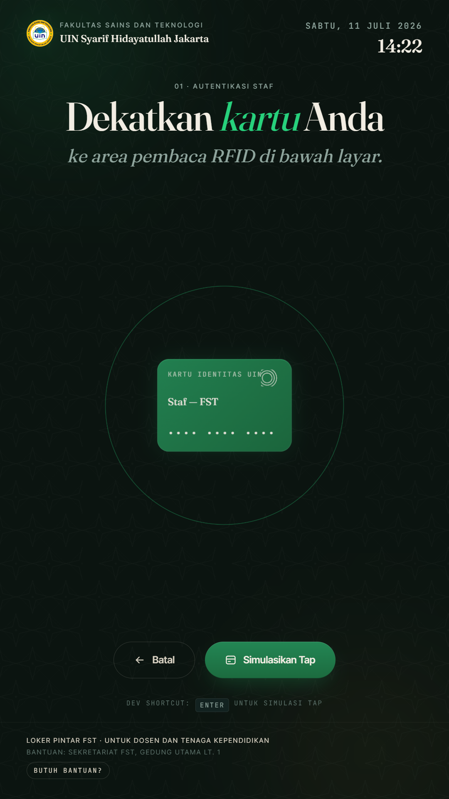
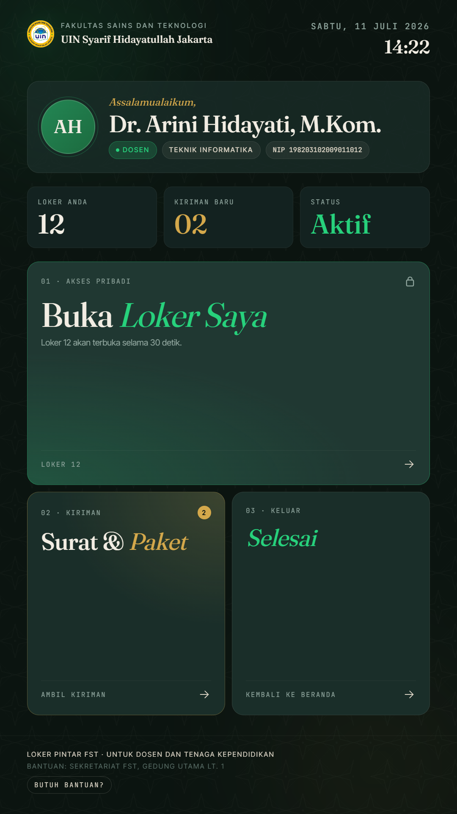
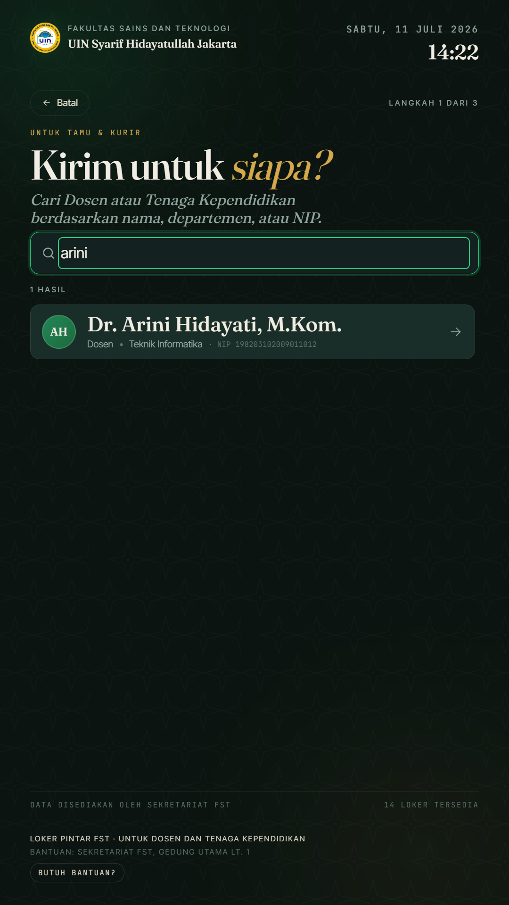
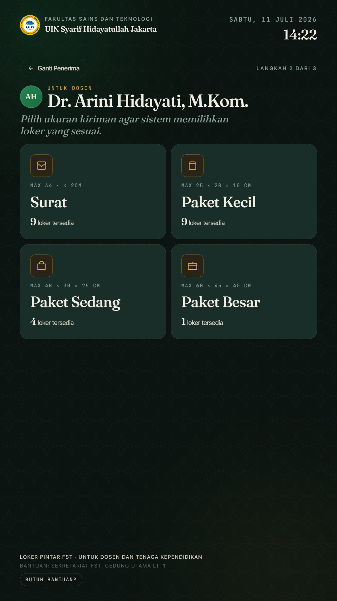
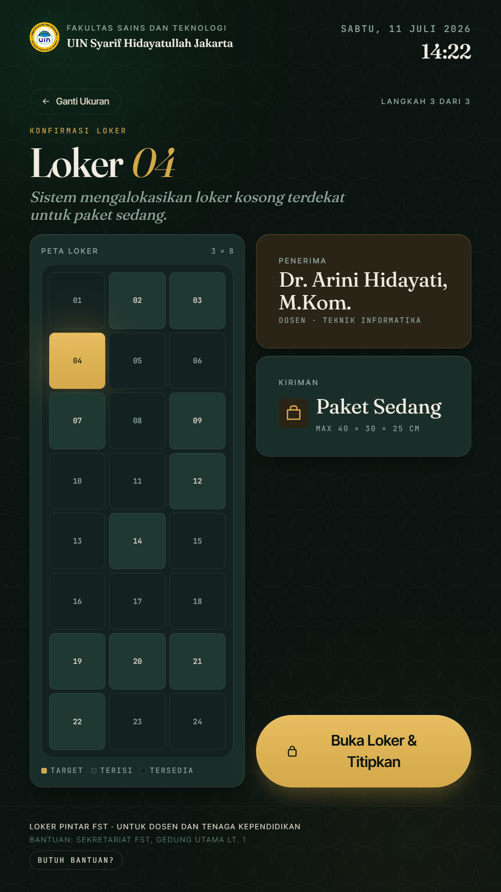
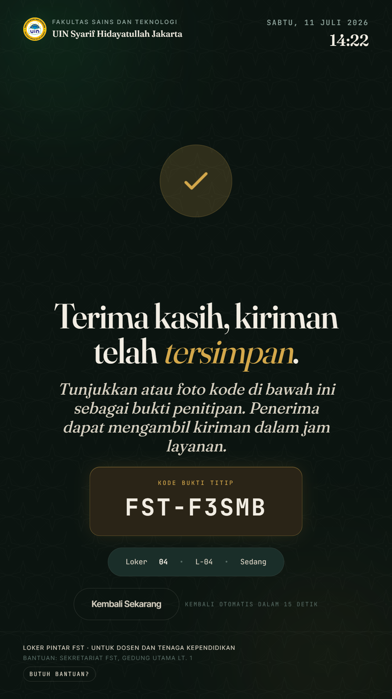

SPESIFIKASI KEBUTUHAN PERANGKAT LUNAK (SRS) SISTEM LOKER PINTAR BERBASIS KIOS UNTUK LINGKUNGAN FST UIN JAKARTA
Disusun Oleh:
Narendra Yusuf Khaerudin
NIM. 12409011030064
PROGRAM STUDI TEKNIK INFORMATIKA
FAKULTAS SAINS DAN TEKNOLOGI
UNIVERSITAS ISLAM NEGERI SYARIF HIDAYATULLAH JAKARTA
2026
KATA PENGANTAR
Puji dan syukur penulis panjatkan ke hadirat Allah SWT yang telah melimpahkan rahmat, taufik, serta hidayah-Nya sehingga penulis dapat menyelesaikan Laporan Ujian Tengah Semester (UTS) mata kuliah Analisis dan Desain Sistem dengan judul "Analisis dan Desain Sistem Loker Pintar (Smart Locker) bagi Dosen dan Tenaga Kependidikan pada Fakultas Sains dan Teknologi UIN Syarif Hidayatullah Jakarta". Shalawat serta salam senantiasa tercurah kepada Nabi Muhammad SAW beserta keluarga, sahabat, dan umatnya hingga akhir zaman.
Laporan ini disusun sebagai pemenuhan tugas Ujian Tengah Semester pada Program Studi Teknik Informatika, Fakultas Sains dan Teknologi, UIN Syarif Hidayatullah Jakarta. Penulisan laporan ini bertujuan untuk memberikan analisis mendalam terhadap sistem berjalan dan merancang sebuah sistem informasi loker pintar yang dapat membantu pengelolaan loker pribadi serta penitipan surat dan paket bagi dosen maupun tenaga kependidikan di lingkungan FST.
Penulis menyadari bahwa laporan ini masih jauh dari sempurna. Oleh karena itu, kritik dan saran yang membangun sangat penulis harapkan demi penyempurnaan karya tulis di masa mendatang. Akhir kata, semoga laporan ini dapat bermanfaat bagi pembaca dan memberikan kontribusi positif bagi pengembangan sistem informasi di lingkungan akademik UIN Syarif Hidayatullah Jakarta.
Jakarta, Mei 2026
Penulis
Narendra Yusuf Khaerudin
NIM. 12409011030064
DAFTAR ISI
KATA PENGANTARi
DAFTAR ISIii
BAB IPENDAHULUAN4
1.1Latar Belakang4
1.2Identifikasi Masalah6
1.3Rumusan Masalah6
1.4Batasan Masalah7
1.5Tujuan Project9
1.6Manfaat Project9
1.7Metode Pengumpulan Data10
1.8Metode Pengembangan Sistem11
1.9Sistematika Penulisan12
BAB IIANALISIS SISTEM BERJALAN12
2.1Gambaran Umum Objek Penelitian12
2.2Profil Instansi14
2.3Struktur Organisasi14
2.4Tugas dan Fungsi16
2.5Prosedur Sistem Berjalan17
2.6Dokumen Masukan dan Keluaran19
2.7Permasalahan Sistem Berjalan20
2.8Solusi yang Diusulkan21
BAB IIIANALISIS KEBUTUHAN SISTEM24
3.1Analisis Kebutuhan Sistem24
3.2Identifikasi Pengguna / Aktor25
3.3Kebutuhan Fungsional26
3.4Kebutuhan Nonfungsional28
3.5Kebutuhan Perangkat Keras29
3.6Kebutuhan Perangkat Lunak31
3.7Kebutuhan Data32
3.8Kebutuhan Input, Proses, dan Output33
3.9Spesifikasi Kebutuhan Sistem34
BAB IVPERANCANGAN SISTEM38
4.1Rancangan Sistem Usulan38
4.2Use Case Diagram42
4.3Deskripsi Use Case43
4.4Activity Diagram49
4.5Sequence Diagram51
4.6Class Diagram53
4.7Perancangan Basis Data55
4.8Struktur Tabel57
4.9Rancangan Antarmuka62
DAFTAR PUSTAKA67
LAMPIRAN69
1
BAB I PENDAHULUAN
1.1 Latar Belakang
Fakultas Sains dan Teknologi (FST) UIN Syarif Hidayatullah Jakarta memiliki ratusan dosen dan tenaga kependidikan aktif yang tersebar pada tujuh program studi, yaitu Teknik Informatika, Sistem Informasi, Matematika, Fisika, Kimia, Biologi, dan Agribisnis. Intensitas pengiriman surat resmi, paket buku ajar, hasil koreksi ujian, serta dokumen administrasi antar pihak cukup padat setiap harinya. Namun hingga saat ini, FST belum memiliki fasilitas penyimpanan pribadi berupa loker bagi dosen dan tenaga kependidikan. Pengelolaan surat dan paket yang masuk sepenuhnya bergantung pada petugas keamanan (security) di pos keamanan gedung FST.
Sistem penitipan yang berjalan saat ini bersifat sangat sederhana dan informal. Kurir yang membawa kiriman menyerahkannya kepada petugas keamanan di pos keamanan pintu masuk gedung FST. Petugas keamanan kemudian mencatat kiriman pada buku catatan penitipan sederhana dan menyimpan kiriman di rak atau meja terbuka di area pos keamanan. Selanjutnya, petugas keamanan menghubungi penerima melalui pesan singkat atau telepon untuk memberitahu adanya kiriman. Penerima kemudian datang ke pos keamanan untuk mengambil kirimannya. Mekanisme ini menimbulkan beberapa permasalahan, antara lain risiko kehilangan dan tertukarnya kiriman, tidak adanya privasi bagi penerima, serta terbebaninya petugas keamanan dengan tugas penitipan yang bukan merupakan tugas utamanya.
Selain itu, sistem penitipan berbasis pos keamanan ini juga rentan terhadap human error, seperti kiriman yang tercecer atau tertukar karena disimpan di area terbuka tanpa pemisahan, petugas keamanan yang lupa memberitahu penerima karena disibukkan tugas keamanan utamanya, hingga kiriman yang menumpuk berhari-hari di meja pos keamanan. Hal ini berdampak pada menurunnya efektivitas operasional fakultas dan dapat mengurangi kepuasan pengguna terhadap layanan administrasi yang diberikan.
Berangkat dari kondisi tersebut, dibutuhkan sebuah fasilitas dan sistem baru berupa loker pintar (smart locker) yang mengintegrasikan teknologi RFID (Radio Frequency Identification) sebagai mekanisme autentikasi (Finkenzeller, 2010), perangkat keras pengunci elektromekanis (solenoid) untuk membuka dan mengunci pintu loker secara otomatis, serta antarmuka kios layar sentuh (kiosk touchscreen interface) sebagai jembatan interaksi pengguna. Sistem ini diharapkan mampu menyediakan fasilitas penyimpanan pribadi yang aman bagi dosen dan tenaga kependidikan, sekaligus meningkatkan efisiensi, keamanan, transparansi, dan akuntabilitas pengelolaan surat dan paket di lingkungan FST UIN Syarif Hidayatullah Jakarta.
Penelitian ini bertujuan untuk menganalisis sistem penitipan surat dan paket yang berjalan saat ini dan menghasilkan rancangan sistem loker pintar yang sesuai dengan kebutuhan pengguna, baik dari sisi dosen dan tenaga kependidikan sebagai penerima kiriman, kurir atau tamu sebagai pengirim paket, maupun admin sekretariat sebagai pengelola sistem. Target konkret yang ingin dicapai setelah sistem diimplementasikan adalah: (1) menyediakan fasilitas penyimpanan pribadi (loker) yang aman bagi dosen dan tenaga kependidikan yang belum tersedia saat ini, (2) memangkas ketergantungan pada petugas keamanan untuk penitipan paket karena kurir dapat menitipkan secara mandiri melalui kios, (3) memastikan penerima mengetahui adanya kiriman melalui notifikasi otomatis, dan (4) tersedianya catatan riwayat akses yang lengkap sebagai dasar audit. Hasil rancangan ini diharapkan dapat menjadi dasar implementasi nyata sistem loker pintar pertama di lingkungan UIN Syarif Hidayatullah Jakarta.
2
1.2 Identifikasi Masalah
Berdasarkan latar belakang yang telah diuraikan, maka dapat diidentifikasi beberapa permasalahan pada pengelolaan penitipan surat dan paket bagi dosen dan tenaga kependidikan di Fakultas Sains dan Teknologi UIN Syarif Hidayatullah Jakarta sebagai berikut:
Belum tersedianya fasilitas penyimpanan pribadi (loker) bagi dosen dan tenaga kependidikan di lingkungan FST.
Penitipan surat dan paket masih bergantung pada petugas keamanan yang memiliki tugas utama menjaga keamanan gedung.
Kiriman disimpan di rak dan meja terbuka di pos keamanan tanpa pengamanan yang memadai, sehingga rawan hilang atau tertukar.
Tidak tersedianya notifikasi otomatis kepada penerima ketika kiriman telah tiba.
Tidak adanya catatan riwayat (log) penitipan yang terstruktur dan dapat dijadikan dasar audit dan evaluasi.
Antrean kurir di pos keamanan mengganggu tugas utama petugas keamanan dan kelancaran akses gedung.
Privasi penerima tidak terjaga karena kiriman terlihat oleh siapa saja yang melewati pos keamanan.
Kapasitas penyimpanan di pos keamanan sangat terbatas sehingga kiriman sering menumpuk.
1.3 Rumusan Masalah
Berdasarkan identifikasi masalah di atas, maka rumusan masalah dalam laporan ini dapat diuraikan sebagai berikut:
Bagaimana menganalisis sistem penitipan surat dan paket yang berjalan saat ini di Fakultas Sains dan Teknologi UIN Syarif Hidayatullah Jakarta?
Bagaimana merancang sistem loker pintar yang dapat menyediakan fasilitas penyimpanan pribadi yang aman bagi dosen dan tenaga kependidikan menggunakan autentikasi kartu RFID?
Bagaimana merancang alur penitipan surat dan paket yang efisien sehingga kurir atau tamu dapat menitipkan kiriman tanpa harus berinteraksi langsung dengan staf sekretariat?
Bagaimana merancang mekanisme alokasi loker secara otomatis berdasarkan ukuran paket yang akan dititipkan?
Bagaimana mendokumentasikan kebutuhan fungsional dan nonfungsional sistem loker pintar dalam bentuk spesifikasi kebutuhan perangkat lunak (Software Requirements Specification) yang sistematis?
3
1.4 Batasan Masalah
Agar pembahasan dalam laporan ini tidak meluas dan tetap berfokus pada tujuan yang ingin dicapai, batasan masalah disusun mengikuti kerangka manajemen proyek Triple Constraints (Schwalbe, 2018), yaitu ruang lingkup (scope), biaya (cost), dan waktu (time), sebagai berikut:
1.4.1 Ruang Lingkup (Scope)
Objek penelitian terbatas pada lingkungan Fakultas Sains dan Teknologi UIN Syarif Hidayatullah Jakarta, khususnya pos keamanan gedung FST yang saat ini menangani penitipan surat dan paket, serta area yang direncanakan untuk penempatan loker pintar.
Aktor yang terlibat terbatas pada tiga aktor utama, yaitu dosen dan tenaga kependidikan, kurir atau tamu pengirim paket, serta admin sekretariat fakultas.
Fitur utama yang dicakup meliputi autentikasi RFID, pembukaan loker pribadi, penitipan surat dan paket secara mandiri oleh kurir, pengambilan kiriman, alokasi loker otomatis berdasarkan ukuran, notifikasi kepada penerima, serta dashboard pemantauan bagi admin.
Fitur yang tidak dicakup oleh sistem antara lain: autentikasi biometrik (wajah maupun sidik jari), integrasi dengan layanan pesan instan eksternal (notifikasi dibatasi melalui surel resmi UIN Syarif Hidayatullah Jakarta), pembayaran atau sewa loker, serta integrasi dengan sistem kepegawaian universitas.
Sistem dirancang untuk perangkat kios touchscreen berorientasi portrait dengan resolusi 1080 × 1920 piksel sebagai antarmuka utama interaksi pengguna, dan ukuran paket dibagi menjadi tiga kategori utama (kecil, sedang, besar) dengan tambahan kategori khusus untuk surat.
1.4.2 Biaya (Cost)
Seluruh perangkat lunak yang digunakan bersifat open-source atau tanpa biaya lisensi: antarmuka kios dibangun dengan teknologi web standar (HTML, CSS, JavaScript murni) tanpa framework berbayar, disajikan melalui server HTTP bawaan Python, dan dijalankan pada peramban Chrome dalam mode kios.
Infrastruktur tidak memerlukan layanan cloud berbayar; seluruh sistem berjalan secara lokal (on-premise) pada satu unit PC/mini-PC yang dapat memanfaatkan perangkat inventaris fakultas yang sudah ada.
Komponen perangkat keras dibatasi pada modul yang terjangkau dan tersedia di pasar lokal, yaitu pembaca RFID, pengunci elektromekanis (solenoid), dan sensor pintu.
1.4.3 Waktu (Time)
Pengerjaan mengikuti kalender akademik semester berjalan: tahap analisis sistem, kebutuhan, dan perancangan (BAB I sampai dengan BAB IV) diselesaikan hingga Ujian Tengah Semester (UTS), sedangkan tahap pembangunan prototipe, evaluasi, dan perbaikan iteratif diselesaikan hingga Ujian Akhir Semester (UAS).
Pembahasan dalam laporan UTS ini mencakup tahap analisis, kebutuhan, dan perancangan sistem; tahap implementasi, pengujian, dan penyempurnaan akan dibahas pada laporan UAS.
1.4.4 Proses
Metode pengembangan sistem yang digunakan dalam penelitian ini adalah metode Prototyping yang terdiri atas enam tahapan berurutan, yaitu Pengumpulan Data, Analisis Sistem, Perancangan Sistem, Pembangunan Purwarupa, Evaluasi Purwarupa, serta Perbaikan dan Iterasi, sebagaimana dijabarkan secara rinci pada subbab 1.8 laporan ini.
Laporan Ujian Tengah Semester (UTS) ini mencakup tiga tahapan awal dari keseluruhan siklus Prototyping, yakni tahap Pengumpulan Data (Collecting Data), tahap Analisis Sistem (System Analysis), dan tahap Perancangan Sistem (System Design), yang pembahasannya tertuang pada BAB II (analisis sistem berjalan beserta permasalahannya), BAB III (perumusan kebutuhan fungsional, nonfungsional, perangkat keras, perangkat lunak, serta kebutuhan data sistem usulan), dan BAB IV (pemodelan UML, perancangan basis data, serta rancangan antarmuka kios).
Tiga tahapan lanjutan, yaitu Pembangunan Purwarupa (Build Prototype), Evaluasi Purwarupa (Prototype Evaluation), dan Perbaikan serta Iterasi (Refinement), berada di luar lingkup laporan UTS ini dan akan dibahas secara menyeluruh pada laporan Ujian Akhir Semester (UAS).
Alur bisnis yang dianalisis pada laporan ini dibatasi pada dua proses utama yang berlangsung dalam pengelolaan penitipan surat dan paket saat ini, yaitu prosedur penitipan kiriman oleh kurir melalui pos keamanan, serta prosedur pengambilan kiriman oleh dosen atau tenaga kependidikan dari pos keamanan.
1.4.5 Tools (Alat)
Alat bantu analisis dan pemodelan sistem pada laporan UTS ini menggunakan notasi Unified Modeling Language (UML) versi 2.5.1 (OMG, 2017) yang divisualisasikan melalui perangkat lunak StarUML, PlantUML, atau Draw.io; ketiga tools tersebut bersifat open-source atau tersedia dalam versi gratis sehingga konsisten dengan batasan biaya pada subbab 1.4.2.
Perancangan mockup dan prototype antarmuka pengguna kios memanfaatkan tools desain antarmuka seperti Figma atau Adobe XD sebagaimana tercantum pada tabel kebutuhan perangkat lunak di BAB III (Tabel 3.5), sementara implementasi antarmuka kios itu sendiri dibangun menggunakan teknologi web standar (HTML5, CSS3, JavaScript ES6+ murni) tanpa framework atau build tools tambahan.
Komponen perangkat keras pendukung sistem dibatasi pada modul pembaca RFID (Radio Frequency Identification), pengunci elektromekanis (solenoid lock), dan sensor pintu (magnetic reed switch) yang sepenuhnya tersedia di pasar lokal; pemilihan dan spesifikasi perangkat keras lebih lanjut akan dirinci pada tahap Perancangan Sistem di laporan UAS.
Seluruh tools yang digunakan, baik untuk pemodelan maupun pengembangan, bersifat open-source atau tanpa biaya lisensi sehingga tidak menambah beban biaya proyek di luar perangkat keras yang telah disebutkan pada subbab 1.4.2.
1.4.6 Objek
Objek penelitian difokuskan pada unit kerja Sekretariat Fakultas Sains dan Teknologi (FST) UIN Syarif Hidayatullah Jakarta yang berlokasi di Gedung FST, Jalan Ir. H. Juanda No. 95, Ciputat, Tangerang Selatan, Banten, khususnya pada pos keamanan gedung FST yang saat ini menangani penitipan surat dan paket bagi dosen dan tenaga kependidikan.
Ruang lingkup fisik yang diamati mencakup area pos keamanan beserta rak dan meja penyimpanan kiriman yang ada saat ini, serta area yang direncanakan untuk penempatan 48 unit loker pintar dalam tiga kategori ukuran (besar, sedang, dan kecil) sebagaimana diuraikan pada deskripsi gambaran umum objek penelitian di BAB II.
Subjek penelitian dibatasi pada tiga kelompok aktor yang berinteraksi langsung dengan sistem penitipan surat dan paket tersebut, yaitu dosen dan tenaga kependidikan selaku penerima kiriman, kurir atau tamu pengirim surat dan paket, serta petugas keamanan selaku pelaksana harian penitipan yang bertanggung jawab atas penerimaan, penyimpanan, dan penyerahan kiriman.
Penelitian ini tidak mencakup integrasi dengan sistem informasi kepegawaian universitas, sistem pembayaran atau sewa loker, maupun layanan pesan instan eksternal; notifikasi kepada pengguna dibatasi melalui surel resmi institusi sebagaimana telah ditetapkan pada batasan ruang lingkup di subbab 1.4.1.
1.5 Tujuan Project
Tujuan yang ingin dicapai dalam penyusunan laporan analisis dan desain sistem loker pintar ini adalah sebagai berikut:
Menghasilkan analisis sistem penitipan surat dan paket yang berjalan saat ini di Fakultas Sains dan Teknologi UIN Syarif Hidayatullah Jakarta beserta permasalahan yang ditemukan.
Merancang sistem loker pintar berbasis RFID yang dapat melakukan autentikasi pengguna secara aman, cepat, dan terdokumentasi dengan baik.
Merancang alur kerja penitipan surat dan paket yang dapat dilakukan secara mandiri oleh kurir atau tamu melalui antarmuka kios touchscreen.
Merancang mekanisme alokasi loker otomatis sesuai ukuran paket yang dititipkan agar pemanfaatan loker menjadi optimal.
Menghasilkan dokumen spesifikasi kebutuhan sistem (System Requirements Specification) yang dapat dijadikan acuan pada tahap perancangan dan implementasi selanjutnya.
4
1.6 Manfaat Project
Hasil analisis dan desain sistem loker pintar ini diharapkan dapat memberikan manfaat secara teoritis maupun praktis sebagai berikut:
1.6.1 Manfaat Teoritis
Memberikan kontribusi pemikiran dan rujukan akademik mengenai penerapan metode analisis dan desain sistem berorientasi objek pada kasus nyata di lingkungan perguruan tinggi.
Memperkaya khazanah literatur penelitian terkait sistem loker pintar berbasis IoT dan RFID di Indonesia.
Menjadi referensi bagi mahasiswa lain yang ingin melakukan penelitian sejenis pada bidang sistem informasi atau Internet of Things (IoT).
1.6.2 Manfaat Praktis
Bagi Dosen dan Tenaga Kependidikan: memiliki fasilitas penyimpanan pribadi (loker) yang aman dan terdedikasi, tidak perlu lagi mengambil kiriman di pos keamanan, mendapatkan notifikasi real-time ketika ada surat atau paket masuk, serta meningkatkan keamanan dan privasi barang serta kiriman.
Bagi Kurir dan Tamu: memungkinkan penitipan surat atau paket secara mandiri kapan saja selama jam operasional, tanpa harus menunggu antrean di sekretariat.
Bagi Admin Sekretariat FST: menghilangkan beban penitipan dari petugas keamanan, menyediakan dashboard pemantauan status loker secara real-time, dan memudahkan audit melalui catatan riwayat (log) yang tersimpan otomatis.
Bagi Fakultas Sains dan Teknologi: meningkatkan kualitas layanan administrasi, mendukung citra fakultas yang adaptif terhadap teknologi, serta menjadi showcase implementasi sistem cerdas yang dapat direplikasi di fakultas lain di lingkungan UIN Syarif Hidayatullah Jakarta.
Bagi Penulis: mengaplikasikan ilmu yang telah diperoleh selama perkuliahan, khususnya pada mata kuliah Analisis dan Desain Sistem, serta memperdalam pemahaman terhadap metodologi pengembangan perangkat lunak.
5
1.7 Metode Pengumpulan Data
Dalam menyusun laporan analisis dan desain sistem loker pintar ini, penulis menggunakan beberapa metode pengumpulan data sebagai berikut:
1.7.1 Observasi
Penulis melakukan pengamatan langsung (observasi) terhadap aktivitas penitipan surat dan paket di pos keamanan gedung Fakultas Sains dan Teknologi UIN Syarif Hidayatullah Jakarta. Menurut Sugiyono (2019), observasi merupakan teknik pengumpulan data yang dilakukan melalui pengamatan dan pencatatan secara sistematis terhadap fenomena yang diteliti. Observasi dilakukan untuk memahami alur kerja yang berjalan, mulai dari penerimaan kiriman oleh petugas keamanan, pencatatan di buku penitipan, pemberitahuan kepada penerima, hingga proses pengambilan kiriman oleh dosen atau tenaga kependidikan.
1.7.2 Wawancara
Wawancara dilakukan kepada pihak-pihak yang berkaitan dengan sistem berjalan, antara lain Kepala Sekretariat FST, dua orang staf administrasi, tiga orang dosen dari program studi yang berbeda, serta satu orang kurir layanan pengiriman yang rutin mengantar paket ke fakultas. Wawancara merupakan teknik pengumpulan data yang dilakukan melalui tanya jawab langsung dengan narasumber untuk memperoleh informasi secara mendalam (Sugiyono, 2019). Tujuan wawancara adalah untuk menggali kebutuhan, harapan, serta keluhan dari setiap pemangku kepentingan terhadap sistem yang berjalan saat ini.
1.7.3 Studi Pustaka
Penulis mempelajari berbagai literatur ilmiah yang relevan, antara lain jurnal nasional dan internasional terkait smart locker system, RFID (Finkenzeller, 2010), IoT, serta metodologi analisis dan desain sistem berorientasi objek. Selain itu, penulis juga merujuk pada buku teks Analisis dan Desain Sistem Informasi (Dennis et al., 2015; Pressman & Maxim, 2020) serta dokumentasi resmi UML 2.5.1 oleh Object Management Group (OMG, 2017) sebagai standar notasi pemodelan.
1.7.4 Dokumentasi
Penulis mengumpulkan dokumen-dokumen pendukung yang berkaitan dengan sistem berjalan, seperti formulir penitipan paket, buku catatan penitipan di pos keamanan, struktur organisasi FST, serta foto kondisi pos keamanan dan rak penyimpanan kiriman. Studi dokumentasi merupakan pelengkap dari penggunaan metode observasi dan wawancara dalam penelitian (Sugiyono, 2019). Dokumen-dokumen ini menjadi dasar untuk memahami bentuk masukan dan keluaran sistem berjalan.
1.8 Metode Pengembangan Sistem
Metode pengembangan sistem yang digunakan dalam project ini adalah metode Prototyping (Pressman & Maxim, 2020). Metode ini dipilih karena kebutuhan pengguna terhadap sistem loker pintar belum pernah didokumentasikan sebelumnya di lingkungan FST, sehingga rancangan perlu divalidasi secara cepat melalui purwarupa (prototype) yang dapat langsung dicoba oleh calon pengguna sebelum sistem dibangun secara penuh. Tahapan pengembangan dilakukan secara berurutan sebagai berikut:
Pengumpulan Data (Collecting Data). Menggali kondisi sistem berjalan dan kebutuhan pemangku kepentingan melalui observasi lapangan, wawancara dengan Kepala Sekretariat, staf administrasi, dosen, dan kurir, serta studi dokumen, sebagaimana diuraikan pada subbab 1.7.
Analisis Sistem (System Analysis). Menganalisis prosedur sistem berjalan beserta permasalahannya (BAB II), kemudian merumuskan kebutuhan fungsional, nonfungsional, perangkat keras, perangkat lunak, dan data dari sistem usulan (BAB III).
Perancangan Sistem (System Design). Memodelkan sistem usulan menggunakan diagram UML (use case, activity, sequence, dan class diagram), merancang basis data, serta merancang antarmuka pengguna kios (BAB IV).
Pembangunan Purwarupa (Build Prototype). Membangun purwarupa antarmuka kios berbasis web dengan resolusi 1080 × 1920 piksel yang mensimulasikan seluruh alur utama: autentikasi RFID, pembukaan loker, penitipan paket oleh kurir, dan pengambilan kiriman.
Evaluasi Purwarupa (Prototype Evaluation). Menguji purwarupa kepada calon pengguna (dosen, tenaga kependidikan, dan kurir) untuk memvalidasi alur, keterbacaan antarmuka, dan kesesuaian dengan kebutuhan yang telah dirumuskan.
Perbaikan dan Iterasi (Refinement). Memperbaiki rancangan dan purwarupa berdasarkan temuan evaluasi, kemudian mengulang siklus evaluasi hingga rancangan dinilai layak menjadi dasar implementasi penuh beserta integrasi perangkat keras (RFID, solenoid, dan sensor pintu).
Sesuai batasan waktu pada subbab 1.4.3, laporan UTS ini mencakup tahap 1 sampai 3, sedangkan tahap 4 sampai 6 akan dibahas pada laporan UAS.
6
1.9 Sistematika Penulisan
Untuk memberikan gambaran yang jelas mengenai isi laporan ini, berikut adalah sistematika penulisan yang digunakan:
BAB I PENDAHULUAN
Bab ini berisi latar belakang penelitian, identifikasi masalah, rumusan masalah, batasan masalah yang disusun berdasarkan kerangka triple constraints (scope, cost, time) serta dilengkapi batasan proses, tools, dan objek penelitian, tujuan project, manfaat project, metode pengumpulan data, metode pengembangan sistem, serta sistematika penulisan laporan secara keseluruhan.
BAB II ANALISIS SISTEM BERJALAN
Bab ini menguraikan gambaran umum objek penelitian yaitu Fakultas Sains dan Teknologi UIN Syarif Hidayatullah Jakarta, profil instansi, struktur organisasi, tugas dan fungsi setiap pihak yang terlibat, prosedur sistem berjalan, dokumen masukan dan keluaran, permasalahan yang ditemukan pada sistem berjalan, serta solusi sistem yang diusulkan.
BAB III ANALISIS KEBUTUHAN SISTEM
Bab ini membahas analisis kebutuhan sistem yang akan dirancang, identifikasi pengguna atau aktor, kebutuhan fungsional, kebutuhan nonfungsional, kebutuhan perangkat keras, kebutuhan perangkat lunak, kebutuhan data, kebutuhan input proses output, hingga spesifikasi kebutuhan sistem secara keseluruhan dalam bentuk yang lebih terstruktur sebagai cikal bakal dokumen Software Requirements Specification (SRS).
BAB IV PERANCANGAN SISTEM
Bab ini membahas perancangan sistem usulan yang meliputi arsitektur sistem tiga lapis (three-tier architecture), pemodelan perilaku sistem menggunakan diagram UML (use case diagram, activity diagram, sequence diagram, dan class diagram), perancangan basis data relasional beserta struktur tabel, serta rancangan antarmuka pengguna kios dalam orientasi portrait 1080 × 1920 piksel.
7
BAB II ANALISIS SISTEM BERJALAN
2.1 Gambaran Umum Objek Penelitian
Objek penelitian dalam laporan ini adalah Fakultas Sains dan Teknologi (FST) Universitas Islam Negeri (UIN) Syarif Hidayatullah Jakarta, yang berlokasi di Jalan Ir. H. Juanda No. 95, Ciputat, Tangerang Selatan, Banten. FST merupakan salah satu fakultas yang berada di lingkungan UIN Syarif Hidayatullah Jakarta dan menjadi fakultas terkemuka dalam pengembangan ilmu pengetahuan dan teknologi yang terintegrasi dengan nilai-nilai keislaman.
FST UIN Syarif Hidayatullah Jakarta menaungi tujuh program studi, yaitu Teknik Informatika, Sistem Informasi, Matematika, Fisika, Kimia, Biologi, dan Agribisnis. Saat ini, FST didukung oleh ratusan dosen tetap, dosen tidak tetap, serta tenaga kependidikan yang menjalankan kegiatan tridharma perguruan tinggi yaitu pendidikan, penelitian, dan pengabdian kepada masyarakat.
Saat ini, FST tidak memiliki fasilitas loker khusus yang terdedikasi. Sebagai gantinya, penitipan surat dan paket untuk dosen dan tenaga kependidikan ditangani oleh petugas keamanan (security) di pos keamanan yang terletak di pintu masuk gedung FST. Pos keamanan ini memiliki meja dan rak terbuka sederhana yang digunakan untuk menyimpan kiriman sementara sebelum diambil oleh penerima. Area ini tidak dilengkapi fasilitas penyimpanan tertutup, sehingga kiriman dibiarkan terbuka tanpa pengamanan khusus. Sebagai solusi, diusulkan pembangunan fasilitas loker pintar dengan tata letak sebagai berikut:
RENCANA TATA LETAK LOKER PINTAR FST (USULAN)
L-01
L-02
L-03
L-04
L-05
L-06
L-07
L-08
L-09
L-10
L-11
L-12
L-13
L-14
L-15
L-16
L-17
L-18
L-19
L-20
L-21
L-22
L-23
L-24
L-25
L-26
L-27
L-28
L-29
L-30
L-31
L-32
L-33
L-34
L-35
L-36
L-37
L-38
L-39
L-40
L-41
L-42
L-43
L-44
L-45
L-46
L-47
L-48
Besar (6 unit, baris 1) Sedang (12 unit, baris 2–3) Kecil (30 unit, baris 4–8)
Gambar 2.1 Rencana Tata Letak Fisik Ruang Loker Pintar FST (Usulan)
8
2.2 Profil Instansi
Nama Instansi
Fakultas Sains dan Teknologi (FST) UIN Syarif Hidayatullah Jakarta
Universitas Induk
Universitas Islam Negeri Syarif Hidayatullah Jakarta
Alamat
Jalan Ir. H. Juanda No. 95, Ciputat, Tangerang Selatan, Banten 15412
Bidang Kegiatan
Pendidikan Tinggi, Penelitian, dan Pengabdian kepada Masyarakat
Jumlah Program Studi
7 (tujuh) program studi: Teknik Informatika, Sistem Informasi, Matematika, Fisika, Kimia, Biologi, Agribisnis
Layanan Utama
Penyelenggaraan pendidikan jenjang Sarjana (S1), pengelolaan kegiatan akademik, pelayanan administrasi mahasiswa dan dosen, serta pengelolaan fasilitas penunjang akademik termasuk layanan penitipan surat dan paket bagi dosen dan tenaga kependidikan
Visi
Menjadi fakultas yang unggul, kompetitif, dan berkarakter Islami dalam pengembangan ilmu pengetahuan dan teknologi pada tingkat nasional maupun internasional
Misi
Menyelenggarakan pendidikan tinggi yang berkualitas, melaksanakan penelitian yang inovatif, serta melakukan pengabdian kepada masyarakat dengan mengintegrasikan ilmu pengetahuan dan keislaman
Tabel 2.1 Profil Singkat Fakultas Sains dan Teknologi UIN Syarif Hidayatullah Jakarta
9
2.3 Struktur Organisasi
Pengelolaan penitipan surat dan paket di lingkungan Fakultas Sains dan Teknologi UIN Syarif Hidayatullah Jakarta melibatkan beberapa pihak yang masing-masing memiliki peran khusus. Bagan hierarki pihak-pihak yang terlibat secara langsung pada sistem pengelolaan penitipan surat dan paket dapat dilihat pada Gambar 2.2.
Dekan Fakultas Sains dan TeknologiPimpinan tertinggi fakultas
│
Wakil Dekan Bidang Administrasi Umum dan KeuanganPenanggung jawab fasilitas penunjang
│
Kepala Sekretariat FSTPengelola operasional sekretariat
│
Petugas Keamanan (Security)Pelaksana harian penitipan surat dan paket
┌──────────────────┴──────────────────┐
Dosen & Tenaga KependidikanPenerima kiriman (internal)
Kurir / Tamu PengirimPengirim kiriman (eksternal)
Gambar 2.2 Bagan Struktur Organisasi Pengelolaan Penitipan Surat dan Paket FST
Keterangan rinci jabatan dan keterlibatan masing-masing pihak diuraikan pada Tabel 2.2 berikut.
Jabatan
Keterangan
Dekan Fakultas Sains dan Teknologi
Pimpinan tertinggi fakultas yang memberikan arahan strategis terhadap penyelenggaraan layanan administrasi termasuk layanan penitipan surat dan paket
Wakil Dekan Bidang Administrasi Umum dan Keuangan
Membawahi langsung unit kerja sekretariat dan menjadi penanggung jawab pengelolaan fasilitas penunjang akademik
Kepala Sekretariat FST
Bertanggung jawab terhadap operasional harian sekretariat dan mengawasi sistem penitipan berbasis pos keamanan
Petugas Keamanan (Security)
Menerima titipan surat dan paket dari kurir, mencatat di buku catatan penitipan, menyimpan kiriman di rak/meja pos keamanan, dan memberitahu penerima melalui telepon atau pesan singkat
Dosen dan Tenaga Kependidikan
Penerima kiriman yang mengambil surat dan paket dari pos keamanan
Kurir / Tamu Pengirim
Pihak eksternal yang mengantarkan surat atau paket untuk dosen maupun tenaga kependidikan
Tabel 2.2 Pihak-pihak yang Terlibat dalam Sistem Pengelolaan Penitipan Surat dan Paket
10
2.4 Tugas dan Fungsi
Berikut adalah uraian tugas dan fungsi dari masing-masing pihak yang berkaitan dengan sistem penitipan surat dan paket di Fakultas Sains dan Teknologi UIN Syarif Hidayatullah Jakarta:
2.4.1 Kepala Sekretariat FST
Mengoordinasikan kegiatan operasional sekretariat fakultas, termasuk pengawasan sistem penitipan surat dan paket.
Menyusun kebijakan internal terkait prosedur penitipan dan pengambilan kiriman.
Menerima laporan bulanan dari petugas keamanan mengenai aktivitas penitipan surat dan paket.
Menangani pengaduan terkait kiriman yang hilang atau tertukar.
2.4.2 Petugas Keamanan (Security)
Menerima titipan surat dan paket dari kurir atau tamu pengirim di pos keamanan.
Mencatat kiriman yang masuk pada buku catatan penitipan (nama pengirim, penerima, tanggal, jenis kiriman).
Menyimpan kiriman pada rak atau meja di area pos keamanan.
Memberitahukan kepada dosen atau tenaga kependidikan bahwa terdapat kiriman, melalui pesan singkat atau telepon.
Menyerahkan kiriman kepada penerima saat datang mengambil dan meminta tanda tangan pengambilan.
2.4.3 Dosen dan Tenaga Kependidikan
Menerima pemberitahuan dari petugas keamanan bahwa terdapat kiriman.
Datang ke pos keamanan untuk mengambil kiriman.
Menunjukkan identitas dan menandatangani buku pengambilan kiriman.
Membawa kiriman dari pos keamanan.
2.4.4 Kurir / Tamu Pengirim
Mengantarkan surat, paket, dokumen resmi, atau buku kepada dosen maupun tenaga kependidikan FST.
Menyerahkan kiriman kepada petugas keamanan sebagai pihak penerima atas nama tujuan kiriman.
Meminta tanda terima atau tanda tangan sebagai bukti penyerahan paket.
11
2.5 Prosedur Sistem Berjalan
Berikut adalah uraian prosedur sistem penitipan surat dan paket yang berjalan saat ini di Fakultas Sains dan Teknologi UIN Syarif Hidayatullah Jakarta. Terdapat dua alur utama, yaitu alur penitipan kiriman oleh kurir dan alur pengambilan kiriman oleh dosen/tenaga kependidikan.
2.5.1 Prosedur Pengambilan Kiriman oleh Dosen/Tenaga Kependidikan
Dosen atau tenaga kependidikan menerima pemberitahuan dari petugas keamanan bahwa terdapat kiriman (melalui telepon atau pesan singkat).
Penerima datang ke pos keamanan gedung FST.
Penerima menyebutkan nama dan menunjukkan kartu identitas kepada petugas keamanan.
Petugas keamanan mencari kiriman yang sesuai di rak atau meja penyimpanan.
Petugas keamanan menyerahkan kiriman kepada penerima.
Penerima menandatangani buku pengambilan kiriman sebagai bukti telah mengambil.
Penerima meninggalkan pos keamanan dengan membawa kirimannya.
2.5.2 Prosedur Penitipan Surat dan Paket oleh Kurir
Kurir tiba di pos keamanan gedung FST.
Kurir menyebutkan nama, NIP, atau program studi dari penerima kiriman.
Petugas keamanan mengecek nama penerima pada daftar pegawai fakultas.
Kurir menyerahkan kiriman kepada petugas keamanan dan menerima tanda tangan sebagai bukti penyerahan.
Petugas keamanan mencatat detail kiriman pada buku catatan penitipan (nama pengirim, penerima, tanggal, jenis kiriman).
Petugas keamanan menyimpan kiriman pada rak atau meja di area pos keamanan.
Petugas keamanan menghubungi penerima melalui pesan singkat atau telepon untuk memberitahukan adanya kiriman baru.
Penerima datang ke pos keamanan dan mengambil kiriman sesuai prosedur pada subbab 2.5.1.
12
2.5.3 Diagram Alur Sistem Berjalan
Berikut adalah ilustrasi alur sistem berjalan secara sederhana untuk prosedur penitipan paket oleh kurir:
Kurir tiba di Pos Keamanan Gedung FST
↓
Kurir menyebutkan nama / NIP penerima
↓
Petugas keamanan mengecek data penerima pada daftar pegawai
↓
Kurir menyerahkan paket dan menandatangani bukti penyerahan
↓
Petugas keamanan mencatat kiriman di buku penitipan
↓
Petugas keamanan menyimpan kiriman di rak / meja pos keamanan
↓
Petugas keamanan menghubungi penerima melalui SMS / telepon
↓
Penerima datang ke pos keamanan dan mengambil kiriman
Gambar 2.3 Diagram Alur Prosedur Penitipan Paket pada Sistem Berjalan
Selain diagram alur di atas, Gambar 2.4 menyajikan ilustrasi pemetaan visual (illustrative mapping) yang menggambarkan keseluruhan alur sistem berjalan secara spasial, mencakup alur penitipan paket oleh kurir (sisi kiri) dan alur pengambilan kiriman oleh dosen/tenaga kependidikan (sisi kanan), beserta titik-titik permasalahan (pain points) yang ditandai dengan ikon peringatan.
Gambar 2.4 Pemetaan Visual Alur Sistem Berjalan — Penitipan Surat dan Paket FST UIN Jakarta13
2.6 Dokumen Masukan dan Keluaran
2.6.1 Dokumen Masukan
Dokumen masukan merupakan dokumen-dokumen yang menjadi input bagi sistem penitipan surat dan paket yang berjalan saat ini, antara lain:
Nama Dokumen
Sumber
Keterangan
Kartu Identitas Dosen / Tendik
Pengguna
Digunakan sebagai bukti identitas saat pengambilan kiriman dari pos keamanan
Resi Pengiriman / Surat Tugas
Kurir
Diserahkan kepada staf sekretariat sebagai bukti pengiriman paket atau surat
Formulir Penitipan Paket
Sekretariat
Diisi oleh petugas keamanan untuk mencatat detail kiriman yang masuk (nama pengirim, penerima, tanggal, jenis kiriman)
Buku Catatan Penitipan
Pos Keamanan
Berisi catatan harian kiriman yang masuk dan diambil (nama pengirim, penerima, tanggal masuk, tanggal pengambilan)
Tabel 2.3 Daftar Dokumen Masukan Sistem Berjalan
2.6.2 Dokumen Keluaran
Dokumen keluaran merupakan dokumen yang dihasilkan oleh sistem penitipan surat dan paket yang berjalan, antara lain:
Nama Dokumen
Tujuan
Keterangan
Tanda Terima Paket
Kurir
Diberikan kepada kurir sebagai bukti bahwa paket telah diterima oleh sekretariat
Pemberitahuan Kiriman (SMS / Telepon)
Penerima Kiriman
Berisi informasi bahwa terdapat kiriman di pos keamanan untuk penerima
Laporan Aktivitas Penitipan Bulanan
Kepala Sekretariat
Berisi rekapitulasi penitipan paket, jumlah kiriman masuk dan keluar, serta kasus kiriman hilang atau tertukar
Buku Pengambilan Kiriman
Pos Keamanan
Berisi tanda tangan penerima sebagai bukti kiriman telah diambil dari pos keamanan
Tabel 2.4 Daftar Dokumen Keluaran Sistem Berjalan
14
2.7 Permasalahan Sistem Berjalan
Berdasarkan hasil observasi dan wawancara yang dilakukan terhadap beberapa pemangku kepentingan, ditemukan sejumlah permasalahan pada sistem penitipan surat dan paket yang berjalan saat ini di Fakultas Sains dan Teknologi UIN Syarif Hidayatullah Jakarta, antara lain:
Belum tersedianya fasilitas penyimpanan pribadi. FST tidak memiliki loker atau fasilitas penyimpanan tertutup bagi dosen dan tenaga kependidikan, sehingga seluruh kiriman hanya disimpan di rak dan meja terbuka pos keamanan.
Keamanan kiriman tidak terjamin. Area pos keamanan bersifat terbuka dan dapat dilihat serta diakses oleh siapa saja, sehingga risiko kehilangan, pencurian, atau kerusakan kiriman cukup tinggi.
Beban kerja petugas keamanan bertambah. Tugas penitipan dan penyerahan kiriman menyita waktu petugas keamanan yang seharusnya difokuskan pada tugas utama menjaga keamanan gedung.
Antrean kurir di pos keamanan. Pada jam-jam tertentu, antrean kurir yang ingin menitipkan paket mengganggu kelancaran akses keluar-masuk gedung dan produktivitas petugas keamanan.
Tidak adanya notifikasi otomatis. Pemberitahuan ke penerima kiriman dilakukan secara manual oleh petugas keamanan melalui SMS atau telepon, sehingga sering terlewatkan apabila petugas sedang bertugas di lapangan.
Tidak ada catatan riwayat yang terstruktur. Pencatatan penitipan hanya dilakukan pada buku catatan manual yang rentan rusak, hilang, dan sulit dijadikan dasar audit.
Privasi penerima tidak terjaga. Kiriman untuk dosen dan tenaga kependidikan terlihat oleh seluruh pengunjung yang melewati pos keamanan, termasuk informasi pengirim dan jenis kiriman.
Kapasitas penyimpanan sangat terbatas. Rak dan meja di pos keamanan memiliki kapasitas terbatas sehingga kiriman sering menumpuk di lantai atau area sekitar, meningkatkan risiko kerusakan dan kehilangan.
15
2.8 Solusi yang Diusulkan
Untuk mengatasi berbagai permasalahan yang telah diuraikan pada subbab 2.7, penulis mengusulkan sebuah sistem baru bernama Sistem Loker Pintar FST (Loker Pintar FST) dengan karakteristik sebagai berikut:
Antarmuka kios layar sentuh (kiosk touchscreen) berorientasi portrait dengan resolusi 1080 × 1920 piksel, dipasang berdampingan dengan deretan loker fisik di area sekretariat. Antarmuka ini menggantikan formulir manual dan buku register fisik.
Autentikasi berbasis RFID. Setiap dosen dan tenaga kependidikan menggunakan kartu identitas yang telah dilengkapi tag RFID untuk membuka loker pribadi tanpa perlu membawa kunci fisik. Mekanisme ini sekaligus menghasilkan catatan riwayat (log) akses secara otomatis.
Mekanisme penitipan mandiri oleh kurir. Kurir dapat melakukan penitipan paket tanpa harus berinteraksi dengan staf. Proses dilakukan melalui tiga tahap pada kios, yaitu pencarian penerima, pemilihan ukuran paket, dan konfirmasi penitipan.
Alokasi loker otomatis. Sistem secara otomatis memilih loker kosong terdekat dengan ukuran yang sesuai (kecil, sedang, atau besar) untuk paket yang akan dititipkan, sehingga pemanfaatan loker menjadi optimal.
Notifikasi otomatis. Sistem mengirimkan notifikasi melalui surel resmi UIN ke penerima setiap kali ada kiriman baru, lengkap dengan informasi pengirim, jenis kiriman, waktu kedatangan, dan nomor loker.
Pembukaan dan penguncian otomatis. Sistem terhubung ke perangkat keras pengunci elektromekanis (solenoid) yang akan membuka loker selama 30 detik dan mengunci kembali secara otomatis setelah pintu ditutup atau setelah timeout.
Dashboard pemantauan. Admin sekretariat dapat memantau status seluruh loker secara real-time, melihat catatan riwayat akses, serta mengelola data dosen dan tenaga kependidikan yang berhak memiliki loker.
Inactivity Timer. Sistem akan kembali ke layar awal (idle screen) setelah 60 detik tanpa aktivitas, sehingga melindungi data sesi pengguna sebelumnya.
16
Dengan diimplementasikannya solusi yang diusulkan, diharapkan terjadi peningkatan signifikan pada kualitas layanan penitipan surat dan paket di Fakultas Sains dan Teknologi UIN Syarif Hidayatullah Jakarta. Manfaat yang diperoleh antara lain tersedianya fasilitas penyimpanan pribadi yang aman, berkurangnya beban petugas keamanan, serta tersedianya data kuantitatif yang dapat dijadikan dasar pengambilan keputusan oleh pimpinan fakultas.
Tabel berikut merangkum perbandingan antara sistem berjalan dengan sistem yang diusulkan:
Aspek
Sistem Berjalan
Sistem yang Diusulkan
Fasilitas penyimpanan
Tidak tersedia (titip di pos keamanan)
48 unit loker pintar dengan tiga ukuran
Penitipan paket
Melalui staf sekretariat
Mandiri melalui kios touchscreen
Pemberitahuan ke penerima
SMS / telepon manual
Surel otomatis dari sistem
Keamanan kiriman
Rak terbuka di pos keamanan
Loker tertutup dengan kunci elektronik
Catatan riwayat akses
Tidak ada
Tercatat otomatis (log)
Pemantauan loker
Visual saja
Dashboard real-time
Risiko kehilangan kiriman
Tinggi (area terbuka)
Rendah (tersimpan dalam loker terkunci)
Tabel 2.5 Perbandingan Sistem Berjalan dan Sistem yang Diusulkan
Untuk memberikan gambaran visual yang lebih ringkas, perbandingan antara sistem berjalan dan sistem yang diusulkan disajikan pula dalam bentuk diagram dua kolom pada Gambar 2.5 berikut.
Sistem Berjalan
Tidak ada loker (titip ke security)
Penitipan via petugas keamanan
Notifikasi SMS / telepon manual
Kiriman di rak/meja terbuka
Tidak ada catatan riwayat terstruktur
Pemantauan tidak ada
Risiko kehilangan kiriman tinggi
Antrean kurir di pos keamanan
Sistem Usulan
Kartu RFID + solenoid elektronik
Mandiri via kios touchscreen
Surel otomatis dari sistem
Otomatis berdasarkan ukuran
Tercatat otomatis (access log)
Dashboard real-time
Kartu dapat di-reset kapan pun
Layanan 24/7 tanpa antrean
Gambar 2.5 Perbandingan Visual Karakteristik Sistem Berjalan dan Sistem yang Diusulkan
17
BAB III ANALISIS KEBUTUHAN SISTEM
3.1 Analisis Kebutuhan Sistem
Analisis kebutuhan sistem merupakan tahapan penting dalam pengembangan perangkat lunak yang bertujuan untuk mengidentifikasi, menganalisis, dan mendokumentasikan kebutuhan pengguna terhadap sistem yang akan dibangun (Sommerville, 2016). Hasil dari tahap ini akan menjadi landasan utama dalam tahap perancangan dan implementasi sistem.
Berdasarkan hasil observasi langsung di Sekretariat Fakultas Sains dan Teknologi UIN Syarif Hidayatullah Jakarta serta wawancara dengan Kepala Sekretariat, staf administrasi, dosen, tenaga kependidikan, dan kurir layanan pengiriman, dapat dirumuskan kebutuhan utama sistem Loker Pintar FST sebagai berikut:
Sistem mampu memverifikasi identitas dosen atau tenaga kependidikan secara cepat dan akurat menggunakan kartu RFID.
Sistem menyediakan dashboard personal untuk setiap pengguna yang menampilkan informasi loker, status kiriman masuk, serta tindakan yang dapat dilakukan.
Sistem mendukung alur penitipan paket secara mandiri oleh kurir melalui antarmuka kios touchscreen.
Sistem dapat mengalokasikan loker secara otomatis berdasarkan ukuran paket (surat, kecil, sedang, besar).
Sistem dapat membuka dan mengunci loker secara elektromekanis dengan durasi unlock terbatas dan mekanisme auto-lock.
Sistem mengirimkan notifikasi kepada penerima setiap kali ada kiriman baru.
Sistem mampu mencatat seluruh aktivitas akses loker untuk keperluan audit.
Sistem akan kembali ke layar awal apabila tidak terdapat aktivitas pengguna selama 60 detik untuk menjaga keamanan sesi.
18
3.2 Identifikasi Pengguna / Aktor
Sistem Loker Pintar FST melibatkan beberapa aktor, baik aktor manusia (pengguna langsung) maupun aktor sistem (perangkat keras dan layanan eksternal). Menurut Jacobson et al. (1992), identifikasi aktor merupakan langkah awal yang krusial dalam pemodelan use case karena aktor menentukan batas (boundary) antara sistem dan lingkungannya. Identifikasi aktor dilakukan untuk memetakan siapa saja yang berinteraksi dengan sistem dan apa peran masing-masing.
No
Aktor
Tipe
Deskripsi Peran
1
Dosen / Tenaga Kependidikan
Manusia
Pengguna utama yang memiliki loker pribadi, dapat membuka loker sendiri, melihat daftar kiriman, dan mengambil kiriman.
2
Kurir / Tamu Pengirim
Manusia
Pengguna eksternal yang menitipkan surat atau paket untuk dosen maupun tenaga kependidikan FST.
3
Admin Sekretariat FST
Manusia
Pengelola sistem yang dapat mengelola data staf, data loker, memantau status loker, dan melihat catatan riwayat akses.
4
RFID Reader
Perangkat
Perangkat pembaca kartu RFID yang terhubung ke kios untuk membaca tag identitas pengguna.
5
Locker Hardware (Solenoid + Sensor Pintu)
Perangkat
Perangkat pengunci elektromekanis dan sensor pintu yang mendeteksi status terbuka/tertutup loker.
6
Notification Service
Sistem
Layanan pengiriman notifikasi melalui surel resmi UIN kepada penerima kiriman.
7
Inactivity Timer
Sistem
Timer internal sistem yang akan mengembalikan tampilan ke layar idle setelah 60 detik tanpa aktivitas.
Tabel 3.1 Identifikasi Aktor Sistem Loker Pintar FST
Untuk memberikan gambaran visual mengenai posisi setiap aktor terhadap sistem, berikut adalah pemetaan aktor dalam bentuk kartu yang dikelompokkan menjadi aktor manusia dan aktor sistem (perangkat dan layanan). Setiap kartu diberi kode A1 sampai A6 untuk memudahkan rujukan.
A1
Dosen / Tendik
Manusia
Pemilik loker, akses dengan kartu RFID
A2
Kurir / Tamu
Manusia
Pengirim eksternal, titip paket mandiri
A3
Admin Sekretariat
Manusia
Pengelola data & pemantauan loker
A4
RFID Reader
Perangkat
Pembaca UID kartu identitas pengguna
A5
Locker Hardware
Perangkat
Solenoid & sensor pintu loker
A6
Notification Service
Sistem
Layanan pengiriman surel ke penerima
Gambar 3.1 Pemetaan Aktor Sistem Loker Pintar FST
19
3.3 Kebutuhan Fungsional
Kebutuhan fungsional (functional requirements) menjelaskan layanan yang harus disediakan oleh sistem, reaksi sistem terhadap masukan tertentu, serta perilaku sistem dalam situasi tertentu (Sommerville, 2016). Kebutuhan fungsional Sistem Loker Pintar FST diidentifikasi berdasarkan setiap aktor yang terlibat.
3.3.1 Kebutuhan Fungsional untuk Dosen / Tenaga Kependidikan
Kode
Deskripsi Kebutuhan
FR-01
Sistem dapat mengautentikasi pengguna melalui RFID tap card pada layar Tap Card.
FR-02
Sistem dapat menampilkan dashboard personal yang berisi nama pengguna, NIP, nomor loker, dan jumlah kiriman masuk.
FR-03
Sistem dapat membuka loker pribadi pengguna selama 30 detik melalui tombol "Buka Loker Saya".
FR-04
Sistem dapat menampilkan daftar surat dan paket yang dititipkan untuk pengguna, lengkap dengan pengirim, jenis kiriman, waktu kedatangan, dan nomor loker.
FR-05
Sistem dapat membuka loker secara otomatis ketika pengguna memilih tombol "Ambil" pada salah satu kiriman dalam daftar.
FR-06
Sistem dapat menampilkan layar konfirmasi setelah loker berhasil dibuka dan ditutup kembali.
3.3.2 Kebutuhan Fungsional untuk Kurir / Tamu
Kode
Deskripsi Kebutuhan
FR-07
Sistem dapat menyediakan halaman pencarian penerima berdasarkan nama, NIP, atau departemen.
FR-08
Sistem dapat menampilkan halaman pemilihan ukuran paket (Surat, Paket Kecil, Paket Sedang, Paket Besar).
FR-09
Sistem dapat menampilkan halaman konfirmasi yang memperlihatkan loker kosong terdekat sesuai ukuran yang dipilih.
FR-10
Sistem dapat membuka loker yang telah dialokasikan selama 30 detik untuk proses penitipan paket.
FR-11
Sistem dapat mengirimkan notifikasi kepada penerima setelah paket berhasil dititipkan.
20
3.3.3 Kebutuhan Fungsional untuk Admin Sekretariat
Kode
Deskripsi Kebutuhan
FR-12
Sistem dapat mengelola data dosen dan tenaga kependidikan (tambah, ubah, hapus, cari).
FR-13
Sistem dapat mengelola data loker (nomor, ukuran, status, kepemilikan).
FR-14
Sistem dapat menampilkan dashboard pemantauan status loker secara real-time.
FR-15
Sistem dapat menampilkan laporan riwayat akses loker berdasarkan rentang waktu tertentu.
FR-16
Sistem dapat melakukan ekspor data laporan ke format PDF dan Microsoft Excel.
3.3.4 Kebutuhan Fungsional Umum
Kode
Deskripsi Kebutuhan
FR-17
Sistem dapat menampilkan layar idle dengan informasi waktu, tanggal, dan tombol pilihan untuk Staf Akademik atau Kurir.
FR-18
Sistem dapat melakukan reset otomatis ke layar idle setelah 60 detik tidak ada aktivitas pengguna.
FR-19
Sistem dapat menampilkan pesan toast (notifikasi singkat) untuk memberikan umpan balik atas tindakan pengguna.
FR-20
Sistem dapat berjalan pada perangkat kios touchscreen orientasi portrait 1080 × 1920 piksel.
Tabel 3.2 Kebutuhan Fungsional Sistem Loker Pintar FST
21
3.4 Kebutuhan Nonfungsional
Kebutuhan nonfungsional (non-functional requirements) menjelaskan batasan dan karakteristik kualitas yang harus dimiliki oleh sistem, di luar fitur fungsional (Sommerville, 2016). Berikut adalah kebutuhan nonfungsional Sistem Loker Pintar FST yang dirumuskan berdasarkan kerangka analisis PIECES (Performance, Information, Economy, Control, Efficiency, Service) yang dikembangkan oleh Whitten dan Bentley (2007).
Kode
Kategori
Deskripsi Kebutuhan
NFR-01
Performa (Performance)
Waktu respon antarmuka kios harus kurang dari 1 detik untuk setiap interaksi pengguna.
NFR-02
Performa
Proses unlock loker dari konfirmasi sampai pintu terbuka tidak boleh lebih dari 2 detik.
NFR-03
Keamanan (Security)
Hanya pengguna dengan kartu RFID terdaftar yang dapat mengakses loker pribadi.
NFR-04
Keamanan
Sistem mencatat seluruh aktivitas akses loker (NIP, waktu, tujuan) untuk keperluan audit.
NFR-05
Keamanan
Sesi pengguna otomatis berakhir setelah 60 detik tidak ada aktivitas.
NFR-06
Kemudahan Penggunaan (Usability)
Antarmuka harus mendukung interaksi touch-only dengan tombol berukuran minimal 60 × 60 piksel.
NFR-07
Kemudahan Penggunaan
Setiap layar dilengkapi dengan label berbahasa Indonesia yang ringkas dan mudah dipahami.
NFR-08
Reliabilitas (Reliability)
Sistem harus dapat beroperasi minimal 12 jam per hari (08.00 – 20.00 WIB) dengan tingkat ketersediaan ≥ 99%.
NFR-09
Pemeliharaan (Maintainability)
Kode sumber harus dimodulkan berdasarkan layar (idle, tap-card, dashboard, courier, mail, opening-locker, done) untuk memudahkan pemeliharaan.
NFR-10
Portabilitas (Portability)
Sistem harus dapat berjalan pada peramban berbasis Chromium versi 110 atau lebih baru.
NFR-11
Skalabilitas (Scalability)
Sistem harus mampu mendukung penambahan jumlah loker tanpa perubahan signifikan pada arsitektur perangkat lunak.
Tabel 3.3 Kebutuhan Nonfungsional Sistem Loker Pintar FST
22
3.5 Kebutuhan Perangkat Keras
Untuk dapat menjalankan Sistem Loker Pintar FST secara optimal, dibutuhkan dukungan perangkat keras dengan spesifikasi minimal sebagai berikut:
Perangkat Keras
Spesifikasi Minimal
Komputer Kios (Mini PC / SBC)
Prosesor quad-core 1.5 GHz, RAM 4 GB, penyimpanan SSD 64 GB, mendukung sistem operasi Linux atau Windows 10
Modul pembaca RFID 13,56 MHz (ISO/IEC 14443) dengan koneksi USB, jarak baca minimal 5 cm
Kartu RFID
Kartu RFID 13,56 MHz dengan kapasitas memori minimal 1 KB, satu kartu untuk setiap dosen / tenaga kependidikan
Solenoid Lock
Solenoid 12V DC sebanyak 48 unit (sesuai jumlah loker), terhubung melalui modul relay ke microcontroller
Sensor Pintu (Reed Switch)
Magnetic reed switch sebanyak 48 unit untuk mendeteksi status terbuka/tertutup masing-masing pintu loker
Microcontroller
ESP32 atau Arduino Mega yang berfungsi mengontrol solenoid dan membaca sensor pintu, terhubung ke kios via serial atau Wi-Fi
Power Supply
Catu daya 12V 30A untuk solenoid, dan adaptor 5V 3A untuk komputer kios
Jaringan
Koneksi internet stabil minimal 10 Mbps untuk pengiriman notifikasi
UPS (Uninterruptible Power Supply)
UPS 1500 VA untuk menjaga sistem tetap berjalan minimal 30 menit saat listrik padam
Tabel 3.4 Spesifikasi Perangkat Keras yang Dibutuhkan
Hubungan antar perangkat keras tersebut dapat digambarkan dalam bentuk diagram topologi pada Gambar 3.2. Komputer kios berperan sebagai pusat orkestrasi (central node), sedangkan modul I/O lain terhubung melalui jalur USB serial dan kabel relay ke microcontroller.
Microcontroller (ESP32 / Arduino Mega)Pengendali GPIO untuk solenoid & sensor
↓ Modul Relay 48-channel ↓
Solenoid Lock × 4812V DC, satu per loker
Reed Switch × 48Sensor pintu magnetik
Power Supply 12V 30A+ UPS 1500 VA backup
↑ LAN / Wi-Fi 10 Mbps ↑
Server BackendPostgreSQL 15 + REST API
SMTP Server UINLayanan notifikasi surel
Gambar 3.2 Diagram Topologi Perangkat Keras Sistem Loker Pintar FST
23
3.6 Kebutuhan Perangkat Lunak
Selain perangkat keras, diperlukan pula sejumlah perangkat lunak untuk mendukung pengembangan dan operasional Sistem Loker Pintar FST. Spesifikasi perangkat lunak yang dibutuhkan adalah sebagai berikut:
Perangkat Lunak
Keterangan
Sistem Operasi Kios
Linux Ubuntu 22.04 LTS atau Windows 10/11 Pro untuk dijalankan pada komputer kios
Peramban Web
Google Chrome atau Microsoft Edge versi 110+ dijalankan dalam mode kiosk (full screen, tanpa toolbar)
Web Server Lokal
Nginx atau Python http.server untuk menyajikan berkas statis kios kepada peramban
Bahasa Pemrograman Frontend
HTML5, CSS3, dan JavaScript ES6+ tanpa build tools tambahan
Bahasa Pemrograman Backend (Tahap Lanjut)
Node.js dengan framework Express atau Python dengan framework FastAPI untuk REST API
Sistem Manajemen Basis Data
PostgreSQL 15 atau MySQL 8 untuk menyimpan data staf, loker, kiriman, dan riwayat akses
Layanan Notifikasi
SMTP server resmi UIN Syarif Hidayatullah Jakarta untuk pengiriman notifikasi melalui surel
Tools Pemodelan
StarUML, PlantUML, atau Draw.io untuk membuat diagram UML (Use Case, Activity, Sequence, Class)
Version Control System
Git dengan platform GitHub atau GitLab untuk pengelolaan kode sumber
Tools Desain Antarmuka
Figma atau Adobe XD untuk perancangan mockup dan prototype antarmuka
Tabel 3.5 Spesifikasi Perangkat Lunak yang Dibutuhkan
Stack teknologi tersebut dapat divisualisasikan dalam empat lapis tumpukan (layered stack) sebagaimana ditunjukkan pada Gambar 3.3. Setiap lapis hanya berinteraksi dengan lapis tepat di atas atau di bawahnya, sesuai prinsip separation of concerns.
Linux Ubuntu 22.04 LTS / Windows 10 Pro · SMTP UIN · Driver RFID · Driver Serial Microcontroller
Gambar 3.3 Tumpukan Teknologi (Tech Stack) Sistem Loker Pintar FST
24
3.7 Kebutuhan Data
Sistem Loker Pintar FST memerlukan beberapa entitas data utama yang saling berhubungan satu sama lain. Berikut adalah deskripsi entitas data yang dibutuhkan beserta sumber dan keterangannya.
Entitas Data
Sumber Data
Deskripsi
Staff (Dosen / Tendik)
Data kepegawaian Bagian Umum FST
Berisi NIP, nama, peran (dosen / tendik), departemen, inisial, kode RFID, dan id loker
Department
Struktur akademik FST
Berisi daftar tujuh program studi di FST UIN Syarif Hidayatullah Jakarta
Locker
Inventaris fasilitas FST
Berisi id loker, nomor, ukuran (kecil/sedang/besar), status, NIP pemilik, dan flag hasMail
Mail
Diisi otomatis saat penitipan oleh kurir
Berisi id kiriman, NIP penerima, pengirim, jenis (surat/paket), catatan, waktu kedatangan, id loker
PackageSize
Konfigurasi sistem
Berisi id ukuran, nama, ikon, dimensi, dan kategori loker yang sesuai
AccessLog
Diisi otomatis saat aktivitas akses loker
Berisi id log, NIP pengguna, id loker, jenis aksi (open self / claim / deliver), dan timestamp
Tabel 3.6 Daftar Entitas Data yang Dibutuhkan Sistem
Hubungan antar entitas data dapat dijelaskan secara sederhana sebagai berikut: satu Staff memiliki tepat satu Locker pribadi, namun dapat menerima banyak Mail. Setiap Mail disimpan dalam satu Locker tertentu. Setiap aktivitas akses loker akan menghasilkan satu entri AccessLog.
25
3.8 Kebutuhan Input, Proses, dan Output
Berikut adalah pemetaan input, proses, dan output untuk setiap fitur utama Sistem Loker Pintar FST:
Fitur
Input
Proses
Output
Autentikasi RFID
Tap kartu RFID
Membaca kode RFID, mencocokkan dengan data Staff, membuka sesi
Tampilan dashboard personal pengguna
Buka Loker Pribadi
Tap tombol "Buka Loker Saya"
Mengirim sinyal unlock ke solenoid, memulai countdown 30 detik, menunggu sensor pintu tertutup
Pintu loker terbuka, halaman konfirmasi "Selesai"
Lihat Daftar Kiriman
Tap tile "Surat & Paket" pada dashboard
Mengambil data Mail berdasarkan NIP pengguna dari basis data
Daftar kiriman dengan pengirim, jenis, waktu kedatangan, dan loker
Pencarian Penerima
Kata kunci nama / NIP / departemen
Mencari data Staff yang sesuai dengan kata kunci
Daftar Staff sesuai hasil pencarian
Pemilihan Ukuran Paket
Tap salah satu kartu ukuran (Surat / Kecil / Sedang / Besar)
Menyimpan ukuran paket pada state aplikasi
Halaman konfirmasi alokasi loker
Alokasi Loker Otomatis
NIP penerima & ukuran paket
Mencari Locker dengan status available dan ukuran yang sesuai, mengubah status menjadi delivering
Nomor loker yang dialokasikan ditampilkan di layar
Penitipan Paket
Tap tombol "Buka Loker & Titipkan"
Membuka loker yang dialokasikan, menyimpan data Mail, mengirim notifikasi ke penerima
Halaman "Selesai", surel notifikasi terkirim
Reset Idle Otomatis
60 detik tanpa aktivitas
Membatalkan sesi, kembali ke layar idle, menghapus data sementara
Tampilan layar idle
Tabel 3.7 Pemetaan Input, Proses, dan Output Sistem Loker Pintar FST
26
3.9 Spesifikasi Kebutuhan Sistem
Pada subbab ini, seluruh kebutuhan yang telah dijabarkan sebelumnya dirangkum dalam bentuk yang lebih terstruktur sebagai cikal bakal dokumen Software Requirements Specification (SRS) sesuai standar IEEE/ISO/IEC/IEEE 29148:2011. Spesifikasi ini terdiri dari empat aspek utama, yaitu deskripsi umum sistem, ruang lingkup sistem, ringkasan kebutuhan fungsional, dan ringkasan kebutuhan nonfungsional.
3.9.1 Deskripsi Umum Sistem
Sistem Loker Pintar FST adalah sistem pengelolaan loker berbasis kios touchscreen yang mengintegrasikan teknologi RFID, kunci elektromekanis, dan layanan notifikasi otomatis untuk mendukung kebutuhan dosen, tenaga kependidikan, kurir, dan admin sekretariat di Fakultas Sains dan Teknologi UIN Syarif Hidayatullah Jakarta. Sistem ini menggantikan mekanisme kunci fisik dan pencatatan manual yang berjalan saat ini.
3.9.2 Ruang Lingkup Sistem
Ruang lingkup Sistem Loker Pintar FST mencakup tiga modul utama, yaitu (1) modul autentikasi dan dashboard personal untuk dosen serta tenaga kependidikan, (2) modul penitipan paket mandiri untuk kurir, dan (3) modul administrasi serta pemantauan untuk admin sekretariat. Modul-modul ini saling terintegrasi dalam satu antarmuka kios touchscreen dan didukung oleh basis data terpusat.
3.9.3 Ringkasan Kebutuhan Fungsional
Sistem Loker Pintar FST memiliki total 20 kebutuhan fungsional (FR-01 hingga FR-20) yang terbagi ke dalam empat kategori, yaitu enam kebutuhan untuk dosen/tenaga kependidikan, lima kebutuhan untuk kurir, lima kebutuhan untuk admin, dan empat kebutuhan umum. Detail lengkap kebutuhan fungsional telah diuraikan pada subbab 3.3.
3.9.4 Ringkasan Kebutuhan Nonfungsional
Sistem Loker Pintar FST memiliki total 11 kebutuhan nonfungsional (NFR-01 hingga NFR-11) yang dikelompokkan dalam tujuh kategori kualitas, yaitu Performa, Keamanan, Kemudahan Penggunaan, Reliabilitas, Pemeliharaan, Portabilitas, dan Skalabilitas. Detail lengkap kebutuhan nonfungsional telah diuraikan pada subbab 3.4.
27
3.9.5 Matriks Keterunutan Kebutuhan
Untuk memastikan setiap kebutuhan fungsional dapat ditelusuri kembali ke aktor pengguna dan permasalahan sistem berjalan, berikut adalah matriks keterunutan (requirements traceability matrix) kebutuhan fungsional terhadap aktor utama sistem. Menurut Sommerville (2016), matriks keterunutan merupakan alat penting dalam rekayasa kebutuhan untuk memverifikasi bahwa seluruh kebutuhan memiliki sumber dan tujuan yang jelas.
Kode FR
Dosen / Tendik
Kurir
Admin
Permasalahan yang Diatasi
FR-01
Ya
–
–
Tidak ada autentikasi terpusat
FR-02
Ya
–
–
Informasi loker tidak terpusat
FR-03
Ya
–
–
Ketergantungan pada kunci fisik
FR-04
Ya
–
–
Tidak ada notifikasi otomatis
FR-05
Ya
–
–
Ketergantungan pada kunci fisik
FR-06
Ya
Ya
–
Tidak ada konfirmasi akhir transaksi
FR-07
–
Ya
–
Beban kerja staf sekretariat tinggi
FR-08
–
Ya
–
Pemanfaatan loker tidak optimal
FR-09
–
Ya
–
Antrean panjang pada jam sibuk
FR-10
–
Ya
–
Ketergantungan pada kunci cadangan
FR-11
–
Ya
–
Tidak ada notifikasi otomatis
FR-12
–
–
Ya
Pengelolaan data manual
FR-13
–
–
Ya
Pengelolaan loker manual
FR-14
–
–
Ya
Tidak ada dashboard pemantauan
FR-15
–
–
Ya
Tidak ada catatan riwayat akses
FR-16
–
–
Ya
Laporan manual yang lambat
FR-17
Ya
Ya
–
Tidak ada antarmuka publik
FR-18
Ya
Ya
–
Risiko sesi pengguna terbuka
FR-19
Ya
Ya
Ya
Tidak ada umpan balik sistem
FR-20
Ya
Ya
–
Antarmuka tidak adaptif perangkat
Tabel 3.8 Matriks Keterunutan Kebutuhan Fungsional terhadap Aktor
Dengan tersusunnya seluruh kebutuhan sistem secara terstruktur sebagaimana diuraikan pada bab ini, maka tahap analisis dan kebutuhan sistem untuk Sistem Loker Pintar FST UIN Syarif Hidayatullah Jakarta dinyatakan selesai. Hasil analisis ini akan menjadi dasar bagi tahap perancangan UML, perancangan antarmuka, dan implementasi sistem yang akan dibahas pada laporan Ujian Akhir Semester (UAS).
28
BAB IV PERANCANGAN SISTEM
4.1 Rancangan Sistem Usulan
Berdasarkan hasil analisis pada Bab III, dirancanglah sebuah sistem baru bernama Sistem Loker Pintar FST (Loker Pintar FST) yang merupakan sistem berbasis kios touchscreen berorientasi portrait dengan resolusi 1080 × 1920 piksel. Sistem ini mengintegrasikan tiga komponen utama, yaitu (1) antarmuka kios berbasis web sebagai jembatan interaksi pengguna, (2) perangkat keras pengunci elektromekanis (solenoid) beserta sensor pintu untuk eksekusi fisik buka-tutup loker, dan (3) modul pembaca RFID untuk autentikasi pengguna secara cepat dan aman.
Secara umum, sistem yang diusulkan terdiri dari tiga lapisan arsitektur (layered architecture), yaitu lapisan presentasi (presentation layer) yang berupa kiosk frontend, lapisan logika aplikasi (application core) yang menangani state machine dan routing antar layar, serta lapisan data (data layer) yang menyediakan akses ke basis data terpusat (Pressman & Maxim, 2020). Di bawah lapisan data, terdapat pula lapisan hardware adapter yang menjadi penghubung antara perangkat lunak dengan modul perangkat keras pada loker fisik.
Berikut adalah ilustrasi arsitektur tiga lapis Sistem Loker Pintar FST yang diusulkan:
RFID Reader, Solenoid Lock, Door Sensor, Notification Service
Gambar 4.1 Arsitektur Tiga Lapis Sistem Loker Pintar FST
29
Sistem yang diusulkan ini mendukung tiga alur utama pengguna sebagaimana telah dirumuskan pada bab sebelumnya:
Alur Buka Loker Pribadi (Self-Open). Dosen atau tenaga kependidikan menempelkan kartu RFID, sistem memverifikasi identitas, menampilkan dashboard personal, dan membuka loker pribadi pengguna.
Alur Pengambilan Kiriman (Claim Mail). Setelah autentikasi, pengguna melihat daftar kiriman yang masuk, memilih kiriman tertentu, dan sistem membuka loker yang menyimpan kiriman tersebut.
Alur Penitipan Paket (Courier Delivery). Kurir mencari penerima, memilih ukuran paket, sistem mengalokasikan loker kosong terdekat sesuai ukuran, membuka loker, dan setelah pintu ditutup mengirim notifikasi kepada penerima.
Selain ketiga alur utama tersebut, terdapat pula mekanisme cross-cutting berupa Inactivity Timer, yaitu pewaktu yang akan mengembalikan tampilan ke layar idle setelah 60 detik tanpa aktivitas pengguna. Hal ini bertujuan untuk menjaga keamanan sesi dan memastikan tidak ada data sensitif pengguna yang tertinggal di layar publik.
Transisi antar layar (screen state) yang membentuk ketiga alur tersebut dapat divisualisasikan dalam bentuk state machine (Rumbaugh et al., 2004) sebagaimana ditunjukkan pada Gambar 4.2. Layar Idle bertindak sebagai keadaan awal sekaligus konvergen, di mana seluruh alur akan kembali ke layar tersebut setelah selesai atau setelah timeout 60 detik.
IDLE (state awal & konvergen)
↓ tap "Staf Akademik" / tap "Kirim Surat atau Paket"
Gambar 4.2 State Machine Transisi Antar Layar Sistem Loker Pintar FST
Untuk melihat pengalaman pengguna secara holistik, peta perjalanan pengguna (user journey map) ketiga alur utama disajikan pada Gambar 4.3 berikut.
Aktor / Tahap
Tahap 1
Tahap 2
Tahap 3
Tahap 4
Tahap 5
Dosen / Tendik (Self-Open)
Datang ke kios, tap "Staf Akademik"
Tap kartu RFID, sistem memverifikasi UID
Lihat dashboard, tap "Buka Loker Saya"
Pintu loker terbuka, ambil/simpan barang
Tutup pintu, layar Done, kembali ke Idle
Dosen / Tendik (Claim Mail)
Tap "Staf Akademik", tap kartu RFID
Tap tile "Surat & Paket" pada Dashboard
Pilih kiriman, tap tombol "Ambil"
Pintu terbuka (aksen emas), ambil kiriman
Tutup pintu, status mail = claimed, Idle
Kurir / Tamu (Deliver)
Tap "Kirim Surat atau Paket" pada Idle
Cari penerima (nama / NIP / dept)
Pilih ukuran paket (Surat/Kecil/Sedang/Besar)
Sistem alokasi loker, tap "Buka & Titipkan"
Tutup pintu, surel terkirim ke penerima
Gambar 4.3 Peta Perjalanan Pengguna (User Journey Map) untuk Tiga Alur Utama
Untuk mendokumentasikan rancangan sistem secara komprehensif, digunakan empat jenis diagram Unified Modeling Language (UML) versi 2.5.1 sebagaimana didefinisikan oleh Object Management Group (OMG, 2017). UML merupakan bahasa pemodelan visual standar yang digunakan secara luas untuk menganalisis, merancang, dan mendokumentasikan sistem berorientasi objek (Booch et al., 2005). Keempat jenis diagram yang digunakan adalah Use Case Diagram untuk menggambarkan kebutuhan fungsional dari perspektif aktor, Activity Diagram untuk menunjukkan alur proses bisnis, Sequence Diagram untuk menjelaskan interaksi antar objek terhadap waktu, serta Class Diagram untuk menggambarkan struktur statis sistem berorientasi objek. Keempat diagram tersebut akan diuraikan secara berurutan pada subbab-subbab berikutnya.
4.2 Use Case Diagram
Use Case Diagram menggambarkan hubungan antara aktor dengan fungsi-fungsi yang disediakan oleh sistem (Dennis et al., 2015). Menurut Jacobson et al. (1992), use case merupakan teknik utama untuk menangkap kebutuhan fungsional karena diagram ini mendeskripsikan perilaku sistem dari sudut pandang pengguna. Pada Sistem Loker Pintar FST, terdapat tiga aktor manusia (Dosen/Tenaga Kependidikan, Kurir/Tamu, dan Admin Sekretariat FST) serta empat aktor sistem/perangkat (RFID Reader, Locker Hardware, Notification Service, dan Inactivity Timer).
Diagram berikut menunjukkan keseluruhan use case yang terdapat pada sistem beserta relasinya, baik berupa include, extend, maupun uses (OMG, 2017):
Gambar 4.4 Use Case Diagram Sistem Loker Pintar FST
Diagram tidak dapat dimuat. Silakan buka file: uml/bab4/use-case.puml
30
Berdasarkan diagram pada Gambar 4.4, dapat diidentifikasi total 11 use case yang terbagi menjadi tiga kelompok berdasarkan aktor pemicu. Berikut adalah ringkasan pengelompokan use case:
No
Aktor Pemicu
Use Case Terkait
1
Dosen / Tenaga Kependidikan
Autentikasi via RFID, Lihat Dashboard Personal, Buka Loker Pribadi, Lihat Daftar Kiriman, Ambil Kiriman, Batalkan Operasi, Lihat Bantuan
2
Tamu / Kurir
Cari Penerima, Pilih Ukuran Paket, Titipkan Paket, Batalkan Operasi, Lihat Bantuan
3
Admin Sekretariat FST
Kelola Data Staf & Loker
Tabel 4.1 Pengelompokan Use Case Berdasarkan Aktor Pemicu
4.3 Deskripsi Use Case
Untuk memberikan gambaran rinci mengenai setiap use case utama, berikut diuraikan deskripsi naratif dari lima use case kritis yang menjadi inti dari Sistem Loker Pintar FST. Format deskripsi mengikuti template fully-dressed use case (Larman, 2004) yang berisi nama, aktor, tujuan, prakondisi, alur utama (main flow), alur alternatif (alternative flow), pascakondisi, dan hasil akhir.
4.3.1 Deskripsi Use Case UC-01 Autentikasi via RFID
Nama Use Case
Autentikasi via RFID
Kode
UC-01
Aktor Utama
Dosen / Tenaga Kependidikan
Aktor Pendukung
RFID Reader (perangkat)
Tujuan
Memverifikasi identitas pengguna sebelum mendapatkan akses ke loker pribadi atau daftar kiriman.
Prakondisi
Sistem berada pada layar Idle. Pengguna telah memiliki kartu RFID terdaftar yang valid.
Alur Utama
1. Pengguna menekan tombol "Staf Akademik" pada layar Idle.
2. Sistem menampilkan layar Tap Card.
3. Pengguna menempelkan kartu RFID pada modul pembaca.
4. RFID Reader membaca UID kartu.
5. Sistem mencocokkan UID dengan data pada tabel staff.
6. Sistem memuat data Staf (NIP, nama, peran, departemen, lockerId).
7. Sistem menampilkan layar Dashboard personal pengguna.
Alur Alternatif
5a. Jika UID tidak ditemukan, sistem menampilkan toast error dan kembali ke layar Idle setelah 3 detik.
Pascakondisi
Sesi pengguna terbuka dan data Staf tersimpan pada KioskState. Layar berpindah ke Dashboard.
31
4.3.2 Deskripsi Use Case UC-03 Buka Loker Pribadi
Nama Use Case
Buka Loker Pribadi
Kode
UC-08
Aktor Utama
Dosen / Tenaga Kependidikan
Aktor Pendukung
Locker Hardware (Solenoid + Door Sensor)
Tujuan
Membuka loker pribadi milik pengguna untuk menyimpan atau mengambil barang.
Prakondisi
Pengguna telah berhasil melakukan autentikasi (UC-01) dan berada pada layar Dashboard.
Alur Utama
1. Pengguna menekan tombol "Buka Loker Saya" pada Dashboard.
2. Sistem menampilkan layar Opening Locker dengan nomor loker dan countdown 30 detik.
3. Sistem mengirim sinyal unlock ke modul solenoid loker pengguna.
4. Pintu loker terbuka secara fisik.
5. Pengguna mengambil atau menyimpan barang.
6. Pengguna menutup kembali pintu loker.
7. Door sensor mendeteksi pintu telah tertutup.
8. Sistem menghentikan countdown dan mengirim sinyal lock ke solenoid.
9. Sistem menampilkan layar Done dengan pesan "Selesai".
10. Setelah 5 detik, sistem otomatis kembali ke layar Idle.
Alur Alternatif
8a. Jika countdown 30 detik habis sebelum pintu ditutup, sistem tetap mengirim sinyal autoLock dan menampilkan layar Done.
Pascakondisi
Loker pengguna terkunci kembali. Catatan akses tersimpan pada tabel access_log dengan tipe self.
4.3.3 Deskripsi Use Case UC-05 Ambil Kiriman
Nama Use Case
Ambil Kiriman (Claim Mail)
Kode
UC-03
Aktor Utama
Dosen / Tenaga Kependidikan
Aktor Pendukung
Locker Hardware (Solenoid + Door Sensor)
Tujuan
Mengambil kiriman (surat / paket) yang telah dititipkan pada loker.
Prakondisi
Pengguna telah berhasil autentikasi (UC-01). Terdapat minimal satu kiriman pada tabel mail dengan recipient_nip = NIP pengguna.
Alur Utama
1. Pengguna menekan tile "Surat & Paket" pada Dashboard.
2. Sistem menampilkan layar Mail List berisi seluruh kiriman untuk pengguna.
3. Pengguna memilih kiriman yang ingin diambil dan menekan tombol "Ambil".
4. Sistem menampilkan layar Opening Locker (aksen emas) dengan nomor loker tujuan.
5. Sistem mengirim sinyal unlock ke loker yang menyimpan kiriman.
6. Pengguna mengambil kiriman dan menutup pintu loker.
7. Sistem menandai kiriman sebagai claimed pada tabel mail.
8. Sistem menampilkan layar Done dan kembali ke Idle setelah 5 detik.
Pascakondisi
Status kiriman menjadi claimed. Loker terkunci kembali dengan status available jika tidak ada kiriman lain.
32
4.3.4 Deskripsi Use Case UC-06 Cari Penerima Paket
Nama Use Case
Cari Penerima Paket
Kode
UC-06
Aktor Utama
Kurir / Tamu Pengirim
Aktor Pendukung
-
Tujuan
Mencari data penerima (Dosen / Tenaga Kependidikan) yang akan dititipkan paket.
Prakondisi
Sistem berada pada layar Idle.
Alur Utama
1. Kurir menekan tombol "Kirim Surat atau Paket" pada layar Idle.
2. Sistem menampilkan layar Courier Search (Langkah 1/3).
3. Kurir mengetikkan kata kunci pada kolom pencarian (nama / NIP / departemen).
4. Sistem melakukan query pencarian pada tabel staff.
5. Sistem menampilkan daftar Staff yang sesuai dengan kata kunci secara real-time.
6. Kurir memilih salah satu nama dari daftar hasil pencarian.
7. Sistem menyimpan data penerima pada KioskState dan berpindah ke layar Courier Size.
Alur Alternatif
5a. Jika tidak ada hasil yang cocok, sistem menampilkan pesan "Tidak ditemukan penerima dengan kata kunci tersebut".
Pascakondisi
Data penerima tersimpan pada state. Layar berpindah ke Courier Size.
4.3.5 Deskripsi Use Case UC-08 Titipkan Paket
Nama Use Case
Titipkan Paket
Kode
UC-05
Aktor Utama
Kurir / Tamu Pengirim
Aktor Pendukung
Locker Hardware, Notification Service
Tujuan
Menitipkan paket pada loker yang dialokasikan secara otomatis dan mengirim notifikasi ke penerima.
Prakondisi
Kurir telah memilih penerima (UC-06) dan ukuran paket. Tersedia minimal satu loker kosong dengan ukuran yang sesuai.
Alur Utama
1. Sistem menampilkan layar Courier Assign yang berisi nomor loker yang dialokasikan.
2. Sistem mengubah status loker terpilih menjadi delivering.
3. Kurir menekan tombol "Buka Loker & Titipkan".
4. Sistem menampilkan layar Opening Locker (aksen emas) dan mengirim sinyal unlock.
5. Pintu loker terbuka, kurir meletakkan paket, lalu menutup pintu.
6. Door sensor mendeteksi pintu tertutup.
7. Sistem membuat record baru pada tabel mail (recipient_nip, sender, type, locker_id).
8. Sistem mengubah status loker menjadi occupied.
9. Sistem mengirim notifikasi via surel ke alamat resmi penerima melalui Notification Service.
10. Sistem menampilkan layar Done dan kembali ke Idle setelah 5 detik.
Alur Alternatif
1a. Jika tidak ada loker kosong dengan ukuran yang dipilih, sistem menonaktifkan opsi ukuran tersebut pada layar Courier Size.
Pascakondisi
Paket tersimpan pada loker. Status loker berubah menjadi occupied. Notifikasi terkirim ke penerima.
33
4.3.6 Ringkasan Seluruh Use Case
Selain lima use case utama yang telah dijabarkan, berikut adalah ringkasan seluruh use case lainnya yang ada pada Sistem Loker Pintar FST:
Kode
Nama Use Case
Aktor Pemicu
Tujuan Singkat
UC-01
Autentikasi via RFID
Dosen / Tendik
Memverifikasi identitas pengguna
UC-02
Lihat Dashboard Personal
Dosen / Tendik
Melihat ringkasan loker dan kiriman
UC-03
Buka Loker Pribadi
Dosen / Tendik
Membuka loker milik pengguna
UC-04
Lihat Daftar Kiriman
Dosen / Tendik
Melihat seluruh kiriman masuk
UC-05
Ambil Kiriman
Dosen / Tendik
Mengambil surat / paket pada loker
UC-06
Cari Penerima
Kurir
Mencari data penerima paket
UC-07
Pilih Ukuran Paket
Kurir
Memilih ukuran kiriman (S/M/L)
UC-08
Titipkan Paket
Kurir
Menitipkan paket pada loker
UC-09
Batalkan Operasi
Dosen / Tendik, Kurir
Membatalkan aksi dan kembali ke Idle
UC-10
Lihat Bantuan
Dosen / Tendik, Kurir
Melihat panduan penggunaan
UC-11
Kelola Data Staf & Loker
Admin
Mengelola entitas master sistem
Tabel 4.2 Ringkasan Seluruh Use Case Sistem Loker Pintar FST
34
4.4 Activity Diagram
Activity Diagram menggambarkan alur aktivitas atau proses bisnis yang berlangsung pada sistem usulan. Menurut Rumbaugh et al. (2004), activity diagram merupakan variasi dari state machine di mana setiap state merepresentasikan eksekusi suatu aksi atau aktivitas. Mengikuti notulensi dan arahan revisi, diagram aktivitas diuraikan satu per satu sesuai dengan setiap use case (pemetaan 1:1), menghasilkan 11 buah diagram aktivitas yang terperinci.
Berikut adalah penjabaran kesebelas Activity Diagram:
4.4.1 Activity Diagram UC-01 Autentikasi via RFID
Gambar 4.5 Activity Diagram UC-01 Autentikasi via RFID
Diagram tidak dapat dimuat. Silakan buka file: docs/uml/bab4/activity-uc01-autentikasi-rfid.puml
4.4.2 Activity Diagram UC-02 Lihat Dashboard Personal
Gambar 4.6 Activity Diagram UC-02 Lihat Dashboard Personal
Diagram tidak dapat dimuat. Silakan buka file: docs/uml/bab4/activity-uc02-lihat-dashboard.puml
4.4.3 Activity Diagram UC-03 Buka Loker Pribadi
Gambar 4.7 Activity Diagram UC-03 Buka Loker Pribadi
Diagram tidak dapat dimuat. Silakan buka file: docs/uml/bab4/activity-uc03-buka-loker-pribadi.puml
4.4.4 Activity Diagram UC-04 Lihat Daftar Kiriman
Gambar 4.8 Activity Diagram UC-04 Lihat Daftar Kiriman
Diagram tidak dapat dimuat. Silakan buka file: docs/uml/bab4/activity-uc04-lihat-daftar-kiriman.puml
4.4.5 Activity Diagram UC-05 Ambil Kiriman
Gambar 4.9 Activity Diagram UC-05 Ambil Kiriman
Diagram tidak dapat dimuat. Silakan buka file: docs/uml/bab4/activity-uc05-ambil-kiriman.puml
4.4.6 Activity Diagram UC-06 Cari Penerima
Gambar 4.10 Activity Diagram UC-06 Cari Penerima
Diagram tidak dapat dimuat. Silakan buka file: docs/uml/bab4/activity-uc06-cari-penerima.puml
4.4.7 Activity Diagram UC-07 Pilih Ukuran Paket
Gambar 4.11 Activity Diagram UC-07 Pilih Ukuran Paket
Diagram tidak dapat dimuat. Silakan buka file: docs/uml/bab4/activity-uc07-pilih-ukuran-paket.puml
4.4.8 Activity Diagram UC-08 Titipkan Paket
Gambar 4.12 Activity Diagram UC-08 Titipkan Paket
Diagram tidak dapat dimuat. Silakan buka file: docs/uml/bab4/activity-uc08-titipkan-paket.puml
4.4.9 Activity Diagram UC-09 Batalkan Operasi
Gambar 4.13 Activity Diagram UC-09 Batalkan Operasi
Diagram tidak dapat dimuat. Silakan buka file: docs/uml/bab4/activity-uc09-batalkan-operasi.puml
4.4.10 Activity Diagram UC-10 Lihat Bantuan
Gambar 4.14 Activity Diagram UC-10 Lihat Bantuan
Diagram tidak dapat dimuat. Silakan buka file: docs/uml/bab4/activity-uc10-lihat-bantuan.puml
4.4.11 Activity Diagram UC-11 Kelola Data Staf & Loker
Gambar 4.15 Activity Diagram UC-11 Kelola Data Staf & Loker
Diagram tidak dapat dimuat. Silakan buka file: docs/uml/bab4/activity-uc11-kelola-data.puml
35
Berdasarkan rangkaian Activity Diagram di atas, dapat diidentifikasi beberapa karakteristik penting dari rancangan alur sistem usulan, antara lain:
Penggunaan Swimlane. Setiap aktivitas dipetakan ke salah satu dari tiga swimlane (Pengguna, Sistem Kiosk, dan Hardware Loker) sesuai notasi partisi aktivitas dalam UML 2.5.1 (OMG, 2017), sehingga tanggung jawab masing-masing pelaku menjadi sangat jelas.
Decision Node. Terdapat dua decision node penting, yaitu pilihan jalur (Staf vs Kurir) dan pilihan aksi pada Dashboard (Buka Loker Saya vs Surat & Paket).
Validasi Data. Pada alur autentikasi RFID, terdapat percabangan untuk menangani kasus kartu valid maupun tidak valid.
Sinkronisasi Hardware. Aktivitas pada swimlane Hardware Loker (aktivasi solenoid dan deteksi pintu tertutup) selalu disinkronkan dengan aktivitas pada Sistem Kiosk.
Cross-cutting Concern. Terdapat catatan khusus mengenai mekanisme inactivity timer 60 detik yang berjalan paralel di seluruh layar non-idle.
Konvergensi ke Idle. Seluruh alur, baik berhasil maupun batal, akan berakhir kembali pada layar Idle setelah menampilkan konfirmasi selama 5 detik dan menghapus state transient.
4.5 Sequence Diagram
Sequence Diagram menggambarkan urutan interaksi antar objek dalam sistem terhadap waktu (Booch et al., 2005). Menurut Dennis et al. (2015), sequence diagram secara khusus menekankan urutan kronologis pengiriman pesan antar objek, sehingga sangat berguna untuk memvalidasi logika skenario use case. Sesuai dengan arahan revisi, diagram sequence dikelompokkan menjadi tiga berdasarkan aktor utamanya (Staf, Kurir, dan Admin), dan menggunakan notasi panah balikan (dashed arrow) untuk pengembalian data.
4.5.1 Sequence Diagram Staf (Dosen / Tendik)
Gambar 4.16 Sequence Diagram Aktor Staf
Diagram tidak dapat dimuat. Silakan buka file: docs/uml/bab4/sequence-staf.puml
4.5.2 Sequence Diagram Tamu / Kurir
Gambar 4.17 Sequence Diagram Aktor Kurir
Diagram tidak dapat dimuat. Silakan buka file: docs/uml/bab4/sequence-kurir.puml
4.5.3 Sequence Diagram Admin
Gambar 4.18 Sequence Diagram Aktor Admin
Diagram tidak dapat dimuat. Silakan buka file: docs/uml/bab4/sequence-admin.puml
Beberapa pola interaksi penting yang dapat dilihat dari Sequence Diagram di atas adalah sebagai berikut:
Pola Boot. Pada saat sistem dijalankan, KioskApp memanggil boot(), kemudian startClock() untuk memulai jam digital, lalu navigate("idle") untuk menampilkan layar awal.
Pola Mount Screen. Setiap kali terjadi navigasi, KioskApp memanggil mount() pada Screen yang dituju dengan parameter stage dan state. Layar lama otomatis di-unmount.
Reset Inactivity Timer. Setiap kali terjadi navigasi, InactivityTimer di-reset agar countdown 60 detik dimulai dari awal.
Pola Query DataRepository. Layar yang membutuhkan data mengambil data dari DataRepository melalui method seperti staff.find(by rfid), mailFor(nip), searchStaff(q), dan findFreeLocker(size).
Pola Hardware Communication. Setiap operasi buka loker dilakukan melalui dua pesan utama: unlock(lockerId) dari Screen ke Hardware, kemudian balikan asinkron ketika sensor mendeteksi pintu telah ditutup.
Loop Fragment pada Pencarian. Pada skenario kurir, terdapat loop pencarian iteratif di mana setiap penekanan tombol oleh kurir akan memicu query searchStaff(q) ke DataRepository.
Notifikasi Asinkron. Setelah penitipan paket berhasil, sistem mengirim pesan ke Notification Service yang akan memproses pengiriman email secara asinkron (menggunakan notasi balikan data).
4.6 Class Diagram
Class Diagram menggambarkan struktur statis Sistem Loker Pintar FST melalui kelas-kelas yang membentuknya, atribut yang dimiliki, metode yang disediakan, serta hubungan antar kelas (Booch et al., 2005). Menurut Larman (2004), class diagram merupakan inti dari pemodelan berorientasi objek karena secara langsung menjadi cetak biru (blueprint) implementasi kode program. Sistem dirancang dengan pendekatan berorientasi objek dan dikelompokkan menjadi lima paket logis, yaitu Domain, Data, App Core, Screens (Mountable Modules), dan Hardware Adapters.
Pada paket Domain, terdapat kelas-kelas entitas inti seperti Staff, Locker, Mail, PackageSize, dan Department, beserta enumeration yaitu Role (DOSEN / TENAGA_KEPENDIDIKAN).
Pada paket Data, terdapat kelas DataRepository sebagai modul tunggal yang menyediakan akses CRUD ke seluruh entitas. Kelas ini memiliki method seperti searchStaff(q), mailFor(nip), countFree(size), dan findFreeLocker(size).
Pada paket App Core, terdapat KioskApp sebagai modul utama yang mengelola state, navigasi, dan koordinasi seluruh komponen. KioskApp didukung oleh KioskState (penyimpan state aplikasi), InactivityTimer (timer 60 detik), ClockService (jam digital), dan ToastHost (penampil notifikasi singkat).
Pada paket Screens, terdapat kelas abstrak Screen yang diturunkan menjadi sembilan layar konkret, yaitu IdleScreen, TapCardScreen, DashboardScreen, OpeningLockerScreen, CourierSearchScreen, CourierSizeScreen, CourierAssignScreen, MailScreen, dan DoneScreen.
Gambar 4.19 Class Diagram Sistem Loker Pintar FST
Diagram tidak dapat dimuat. Silakan buka file: docs/uml/class.puml
39
Berdasarkan Class Diagram pada Gambar 4.19, terdapat beberapa relasi penting yang perlu diperhatikan:
Relasi
Multiplisitas
Keterangan
Staff – Locker
1 – 0..1
Satu Staff memiliki paling banyak satu Locker pribadi (owns).
Staff – Mail
1 – 0..*
Satu Staff dapat menerima banyak Mail (receives).
Mail – Locker
0..* – 1
Banyak Mail dapat tersimpan pada satu Locker (stored in).
KioskApp – KioskState
1 – 1 (composition)
KioskApp memiliki dan mengelola siklus hidup KioskState.
KioskApp – InactivityTimer
1 – 1 (composition)
KioskApp memiliki satu InactivityTimer yang aktif sepanjang aplikasi berjalan.
DataRepository melakukan agregasi terhadap seluruh entitas domain.
Screen ↔ DataRepository
uses
Layar-layar yang membutuhkan data berinteraksi dengan DataRepository melalui pola dependency.
Screen ↔ Hardware Adapter
uses
Layar TapCard menggunakan RfidReader, OpeningLocker menggunakan LockerHardware, CourierAssign menggunakan NotificationGateway.
Tabel 4.3 Relasi Antar Kelas pada Sistem Loker Pintar FST
Selain Class Diagram utama di atas, berikut adalah variasi Class Diagram (Tanpa Spesialisasi). Pada pendekatan flat ini, tidak ada generalisasi/inheritance sama sekali. Variasi entitas dimodelkan sebagai atribut (seperti role pada Pengguna dan size pada Loker). Menurut Larman (2004), pemilihan antara pewarisan dan atribut tipe bergantung pada sejauh mana perbedaan perilaku antar varian; apabila perbedaan hanya pada data dan bukan pada perilaku, pendekatan datar lebih pragmatis. Pendekatan ini relevan dengan implementasi nyata pada sistem, di mana struktur data lebih datar.
Gambar 4.20 Class Diagram (Tanpa Spesialisasi) Sistem Loker Pintar FST
Diagram tidak dapat dimuat. Silakan buka file: docs/uml/class-no-specialization.puml
Berdasarkan Class Diagram (Tanpa Spesialisasi) pada Gambar 4.20, terdapat beberapa penyesuaian relasi penting yang perlu diperhatikan bila dibandingkan dengan diagram utama:
Relasi
Multiplisitas
Keterangan
Pengguna – Loker
1 – 0..1
Satu Pengguna memiliki paling banyak satu Loker pribadi (memiliki).
Pengguna – Kiriman
1 – 0..*
Satu Pengguna dapat menerima banyak Kiriman (menerima).
Kiriman – Loker
0..* – 1
Banyak Kiriman dapat tersimpan pada satu Loker (disimpan di).
UkuranPaket – Loker
1 – 0..*
Satu ukuran paket memetakan ke banyak loker yang mendukung ukuran tersebut (dipetakan ke ukuran).
KioskApp – ScreenRouter
1 – 1 (composition)
Karena tidak ada inheritance pada Screen, KioskApp mendelegasikan navigasi ke modul mandiri ScreenRouter.
DataRepository melakukan agregasi secara flat terhadap seluruh entitas domain (Pengguna menggantikan Staff).
KioskState ↔ Pengguna/Loker
-
State dari aplikasi menyimpan referensi (pointer) langsung ke Pengguna dan Loker yang sedang aktif berinteraksi.
Tabel 4.4 Relasi Antar Kelas pada Class Diagram (Tanpa Spesialisasi)
4.7 Perancangan Basis Data
Basis data Sistem Loker Pintar FST dirancang menggunakan model relasional dengan menerapkan kaidah normalisasi hingga bentuk normal ketiga (3NF) untuk meminimalkan redundansi data (Connolly & Begg, 2015). Database Management System (DBMS) yang dipilih adalah PostgreSQL versi 15 karena dukungannya yang baik terhadap tipe data UUID, JSON, serta fitur transaksional yang konsisten.
Berdasarkan analisis Class Diagram, dirancang tujuh tabel utama, yaitu tbl_department, tbl_staff, tbl_locker, tbl_mail, tbl_package_size, tbl_access_log, dan tbl_rfid_card. Berikut adalah ilustrasi Entity Relationship Diagram (ERD) yang menggambarkan struktur dan keterkaitan antar tabel. ERD dimodelkan mengikuti notasi Chen yang diperkenalkan oleh Chen (1976) dan telah menjadi standar dalam perancangan basis data relasional (Connolly & Begg, 2015).
40
tbl_department
department_id (PK)
nama_departemen
kode_departemen
created_at
tbl_staff
nip (PK)
nama_lengkap
peran (DOSEN / TENDIK)
department_id (FK)
email
inisial
locker_id (FK)
created_at
updated_at
tbl_rfid_card
card_uid (PK)
nip (FK)
tanggal_terbit
status (aktif / nonaktif)
created_at
tbl_locker
locker_id (PK)
nomor_loker
ukuran (KECIL/SEDANG/BESAR)
status (AVAILABLE/...)
owner_nip (FK)
has_mail
created_at
updated_at
tbl_package_size
size_id (PK)
nama (Surat/Kecil/Sedang/Besar)
icon
dimensi
tbl_mail
mail_id (PK)
recipient_nip (FK)
sender
type (SURAT / PAKET)
note
arrived_at
locker_id (FK)
status (PENDING/CLAIMED)
claimed_at
tbl_access_log
log_id (PK)
nip (FK)locker_id (FK)
action_type (SELF / CLAIM_MAIL / DELIVER)
timestamp_access
duration_open_seconds closed_normally (boolean)
device_id created_at
Gambar 4.21 Entity Relationship Diagram Sistem Loker Pintar FST
Relasi antar tabel pada ERD di atas dapat diuraikan sebagai berikut: tbl_department berhubungan satu ke banyak (1:N) dengan tbl_staff; tbl_staff berhubungan satu ke satu (1:1) dengan tbl_locker sebagai pemilik tetap; tbl_staff berhubungan satu ke banyak (1:N) dengan tbl_rfid_card, tbl_mail, dan tbl_access_log; serta tbl_locker berhubungan satu ke banyak (1:N) dengan tbl_mail dan tbl_access_log.
41
4.8 Struktur Tabel
Pada subbab ini, diuraikan struktur rinci dari setiap tabel yang dirancang, meliputi nama field, tipe data, ukuran, status null, kunci utama (Primary Key), kunci tamu (Foreign Key), serta keterangan singkat.
4.8.1 Tabel tbl_department
No
Field
Tipe Data
Null
Key
Keterangan
1
department_id
VARCHAR(10)
No
PK
ID unik departemen (mis. DEP-TI)
2
nama_departemen
VARCHAR(100)
No
-
Nama lengkap departemen
3
kode_departemen
VARCHAR(10)
Yes
-
Kode singkat (TI, SI, MAT, dll.)
4
created_at
TIMESTAMP
No
-
Waktu data dibuat
Tabel 4.5 Struktur Tabel tbl_department
4.8.2 Tabel tbl_staff
No
Field
Tipe Data
Null
Key
Keterangan
1
nip
VARCHAR(20)
No
PK
Nomor Induk Pegawai
2
nama_lengkap
VARCHAR(120)
No
-
Nama lengkap dengan gelar
3
peran
ENUM
No
-
Nilai: DOSEN atau TENDIK
4
department_id
VARCHAR(10)
No
FK
Mengacu ke tbl_department
5
email
VARCHAR(120)
No
UNQ
Email resmi UIN untuk notifikasi
6
inisial
VARCHAR(5)
No
-
Inisial untuk tampilan avatar
7
locker_id
VARCHAR(10)
Yes
FK
Mengacu ke tbl_locker (pemilikan tetap)
8
created_at
TIMESTAMP
No
-
Waktu data dibuat
9
updated_at
TIMESTAMP
No
-
Waktu data terakhir diperbarui
Tabel 4.6 Struktur Tabel tbl_staff
42
4.8.3 Tabel tbl_rfid_card
No
Field
Tipe Data
Null
Key
Keterangan
1
card_uid
VARCHAR(20)
No
PK
UID unik kartu RFID (hexa)
2
nip
VARCHAR(20)
No
FK
Mengacu ke tbl_staff
3
tanggal_terbit
DATE
No
-
Tanggal kartu diterbitkan
4
status
ENUM
No
-
Nilai: aktif atau nonaktif
5
created_at
TIMESTAMP
No
-
Waktu data dibuat
Tabel 4.7 Struktur Tabel tbl_rfid_card
4.8.4 Tabel tbl_locker
No
Field
Tipe Data
Null
Key
Keterangan
1
locker_id
VARCHAR(10)
No
PK
ID loker (mis. L-12)
2
nomor_loker
INTEGER
No
UNQ
Nomor urut 1 – 48
3
ukuran
ENUM
No
-
Nilai: KECIL, SEDANG, BESAR
4
status
ENUM
No
-
Nilai: AVAILABLE, ASSIGNED, OCCUPIED, DELIVERING
5
owner_nip
VARCHAR(20)
Yes
FK
NIP pemilik tetap (jika ada)
6
has_mail
BOOLEAN
No
-
Penanda ada/tidaknya kiriman
7
created_at
TIMESTAMP
No
-
Waktu data dibuat
8
updated_at
TIMESTAMP
No
-
Waktu data terakhir diperbarui
Tabel 4.8 Struktur Tabel tbl_locker
4.8.5 Tabel tbl_package_size
No
Field
Tipe Data
Null
Key
Keterangan
1
size_id
VARCHAR(10)
No
PK
ID ukuran paket (S, M, L, XL)
2
nama
VARCHAR(40)
No
-
Surat / Paket Kecil / Sedang / Besar
3
icon
VARCHAR(40)
Yes
-
Nama ikon untuk tampilan
4
dimensi
VARCHAR(60)
Yes
-
Maks dimensi paket (PxLxT cm)
Tabel 4.9 Struktur Tabel tbl_package_size
43
4.8.6 Tabel tbl_mail
No
Field
Tipe Data
Null
Key
Keterangan
1
mail_id
VARCHAR(15)
No
PK
ID kiriman (mis. M-001)
2
recipient_nip
VARCHAR(20)
No
FK
NIP penerima (tbl_staff)
3
sender
VARCHAR(120)
No
-
Nama pengirim atau jasa kurir
4
type
ENUM
No
-
Nilai: SURAT atau PAKET
5
note
TEXT
Yes
-
Catatan tambahan dari kurir
6
arrived_at
TIMESTAMP
No
-
Waktu kiriman tiba di loker
7
locker_id
VARCHAR(10)
No
FK
Loker tempat kiriman disimpan
8
status
ENUM
No
-
Nilai: PENDING atau CLAIMED
9
claimed_at
TIMESTAMP
Yes
-
Waktu kiriman diambil
Tabel 4.10 Struktur Tabel tbl_mail
4.8.7 Tabel tbl_access_log
No
Field
Tipe Data
Null
Key
Keterangan
1
log_id
BIGSERIAL
No
PK
ID log (auto-increment)
2
nip
VARCHAR(20)
Yes
FK
NIP pengguna (null jika kurir)
3
locker_id
VARCHAR(10)
No
FK
Loker yang diakses
4
action_type
ENUM
No
-
Nilai: SELF, CLAIM_MAIL, DELIVER
5
timestamp_access
TIMESTAMP
No
-
Waktu akses dimulai
6
duration_open_seconds
INTEGER
Yes
-
Durasi pintu terbuka (detik)
7
closed_normally
BOOLEAN
No
-
True jika pintu ditutup oleh user
8
device_id
VARCHAR(20)
Yes
-
ID kios yang digunakan
9
created_at
TIMESTAMP
No
-
Waktu log tercatat
Tabel 4.11 Struktur Tabel tbl_access_log
44
4.8.8 Ringkasan Constraint dan Indeks
Untuk menjaga integritas data dan performa query, dirancang sejumlah constraint dan indeks tambahan pada basis data sebagai berikut:
No
Constraint / Indeks
Tabel
Keterangan
1
FK_staff_department
tbl_staff
ON DELETE RESTRICT, ON UPDATE CASCADE
2
FK_staff_locker
tbl_staff
ON DELETE SET NULL
3
FK_rfid_staff
tbl_rfid_card
ON DELETE CASCADE
4
FK_mail_recipient
tbl_mail
ON DELETE RESTRICT
5
FK_mail_locker
tbl_mail
ON DELETE RESTRICT
6
UNIQUE(nip) → tbl_rfid_card
tbl_rfid_card
Satu staf hanya boleh punya satu kartu aktif
7
UNIQUE(nomor_loker)
tbl_locker
Nomor loker unik di seluruh sistem
8
INDEX(recipient_nip, status)
tbl_mail
Mempercepat query daftar kiriman per pengguna
9
INDEX(timestamp_access)
tbl_access_log
Mempercepat query laporan berdasarkan rentang waktu
10
INDEX(status, ukuran)
tbl_locker
Mempercepat findFreeLocker(size)
Tabel 4.12 Ringkasan Constraint dan Indeks Basis Data
4.9 Rancangan Antarmuka
Rancangan antarmuka Sistem Loker Pintar FST menggunakan pendekatan Calm Academic Futurism dengan kanvas portrait 1080 × 1920 piksel yang sesuai dengan orientasi monitor kios. Identitas visual menggunakan warna hijau institusional UIN sebagai warna utama, dengan aksen emas hangat untuk elemen yang berkaitan dengan jalur kurir dan kiriman.
Sistem terdiri dari sembilan layar utama yang saling terhubung melalui mekanisme navigasi state machine. Berikut adalah wireframe sederhana untuk masing-masing layar penting yang menjadi titik kritis interaksi pengguna.
45
4.9.1 Layar Idle dan Tap Card
05 MEI 202611:13
LOKER PINTAR FST
Assalamu'alaikum wr. wb. Selamat datang
Staf Akademik
Kirim Surat atau Paket
Sentuh layar untuk memulai
Gambar 4.22 Layar Idle
05 MEI 202611:13
TAP KARTU ANDA
RFID READER ZONE
Tempelkan kartu identitas Anda pada zona pembaca
Batal
Gambar 4.23 Layar Tap Card
4.9.2 Layar Dashboard dan Mail List
Dr. Arini H.11:13
DASHBOARD
Loker Anda: L-12
Buka Loker Saya
Surat & Paket (3 baru)
Keluar / Logout
Gambar 4.24 Layar Dashboard Personal
Surat & Paket11:13
KIRIMAN ANDA
JNE - Buku AjarL-12
SiCepat - SuratL-12
Mhs Riski - TugasL-12
Ambil Pilihan
Kembali
Gambar 4.25 Layar Mail List
46
4.9.3 Layar Pencarian Penerima dan Pilih Ukuran (Kurir)
Langkah 1/311:13
CARI PENERIMA
[ Nama / NIP / Departemen ]
Dr. Arini HidayatiTI
Prof. Budi SantosoMAT
Siti Nurhaliza, M.T.SI
Batal
Gambar 4.26 Layar Courier Search
Langkah 2/311:13
UKURAN PAKET
Untuk: Dr. Arini Hidayati
Surat (20 kosong)
Paket Kecil (15 kosong)
Paket Sedang (8 kosong)
Paket Besar (3 kosong)
Kembali
Gambar 4.27 Layar Courier Size
4.9.4 Layar Konfirmasi Alokasi dan Buka Loker
Langkah 3/311:13
LOKER ALOKASI
Penerima: Dr. Arini H. Paket: Sedang
1
2
3
4
5
6
7
8
9
10
11
12
13
14
15
16
17
18
Loker L-08
Buka Loker & Titipkan
Gambar 4.28 Layar Courier Assign
Membuka Loker11:13
LOKER L-08 TERBUKA
08
Sisa waktu: 00:28
Letakkan paket lalu tutup pintu
Selesai
Gambar 4.29 Layar Opening Locker
47
4.9.5 Layar Done dan Dashboard Admin
Selesai11:14
BERHASIL
Paket telah dititipkan pada Loker L-08. Notifikasi terkirim ke penerima.
Kembali ke Idle dalam 5 detik...
Gambar 4.30 Layar Done (Konfirmasi)
ADMIN PANEL11:14
STATUS LOKER LIVE
Total: 48 - Terisi: 23 - Kosong: 25
1
2
3
4
5
6
7
8
9
10
11
12
13
14
15
16
17
18
19
20
21
22
23
24
Terisi Kosong
Lihat Riwayat
Kelola Staf
Gambar 4.31 Layar Admin Dashboard
4.9.6 Pedoman Visual dan Interaksi
Berikut adalah pedoman visual dan interaksi yang diterapkan secara konsisten pada seluruh layar Sistem Loker Pintar FST:
Aspek
Spesifikasi
Orientasi Layar
Portrait 1080 × 1920 piksel (rasio 9:16)
Tipografi Judul
Editorial serif (Fraunces) untuk hero typography
Tipografi UI
Sans-serif (Inter Tight) untuk teks antarmuka
Tipografi Mono
JetBrains Mono untuk NIP dan ID loker
Warna Utama
Hijau institusional UIN (#2A403C)
Warna Aksen
Emas hangat untuk jalur kurir dan kiriman
Ukuran Tombol Minimal
60 × 60 piksel (touch-friendly)
Latar Belakang
Pola geometris Islamic 8-point star yang halus
Mode Interaksi
Touch-only, tanpa dukungan keyboard atau mouse
Bahasa
Bahasa Indonesia dengan salam pembuka berbahasa Arab
Inactivity Timeout
60 detik tanpa interaksi → kembali ke Idle
Tabel 4.13 Pedoman Visual dan Interaksi Antarmuka Sistem
Dengan tersusunnya rancangan sistem yang komprehensif sebagaimana diuraikan pada Bab IV ini, mulai dari rancangan umum sistem usulan, diagram UML lengkap (Use Case, Activity, Sequence, Class), perancangan basis data, struktur tabel, hingga rancangan antarmuka kios, maka tahap perancangan Sistem Loker Pintar FST untuk Fakultas Sains dan Teknologi UIN Syarif Hidayatullah Jakarta dinyatakan selesai. Hasil rancangan ini siap menjadi acuan utama pada tahap implementasi dan pengujian sistem yang akan dibahas pada laporan Ujian Akhir Semester (UAS).
DAFTAR PUSTAKA
Booch, G., Rumbaugh, J., & Jacobson, I. (2005). The Unified Modeling Language User Guide (2nd ed.). Addison-Wesley Professional.
Chen, P. P.-S. (1976). The Entity-Relationship Model—Toward a Unified View of Data. ACM Transactions on Database Systems, 1(1), 9–36. https://doi.org/10.1145/320434.320440
Connolly, T., & Begg, C. (2015). Database Systems: A Practical Approach to Design, Implementation, and Management (6th ed.). Pearson Education.
Dennis, A., Wixom, B. H., & Roth, R. M. (2015). Systems Analysis and Design (6th ed.). John Wiley & Sons.
Finkenzeller, K. (2010). RFID Handbook: Fundamentals and Applications in Contactless Smart Cards, Radio Frequency Identification and Near-Field Communication (3rd ed.). John Wiley & Sons. https://doi.org/10.1002/9780470665121
Jacobson, I., Christerson, M., Jonsson, P., & Övergaard, G. (1992). Object-Oriented Software Engineering: A Use Case Driven Approach. Addison-Wesley.
Larman, C. (2004). Applying UML and Patterns: An Introduction to Object-Oriented Analysis and Design and Iterative Development (3rd ed.). Prentice Hall.
Object Management Group (OMG). (2017). OMG Unified Modeling Language (OMG UML), Version 2.5.1. Object Management Group. https://www.omg.org/spec/UML/2.5.1
Pressman, R. S., & Maxim, B. R. (2020). Software Engineering: A Practitioner's Approach (9th ed.). McGraw-Hill Education.
Rumbaugh, J., Jacobson, I., & Booch, G. (2004). The Unified Modeling Language Reference Manual (2nd ed.). Addison-Wesley Professional.
Schwalbe, K. (2018). Information Technology Project Management (9th ed.). Cengage Learning.
Sommerville, I. (2016). Software Engineering (10th ed.). Pearson Education.
Sugiyono. (2019). Metode Penelitian Kuantitatif, Kualitatif, dan R&D (2nd ed.). Penerbit Alfabeta.
Whitten, J. L., & Bentley, L. D. (2007). Systems Analysis and Design Methods (7th ed.). McGraw-Hill/Irwin.
LAMPIRAN
Lampiran A — Dokumentasi Sistem Berjalan
Gambar berikut menunjukkan peta lokasi dan kondisi sistem penitipan surat dan paket yang berjalan saat ini di pos keamanan gedung Fakultas Sains dan Teknologi UIN Syarif Hidayatullah Jakarta.
Lampiran A.1 — Peta Lokasi dan Kondisi Sistem Berjalan di Pos Keamanan FST
Lampiran B — Tangkapan Layar Prototipe Antarmuka Kios
Berikut adalah tangkapan layar (screenshot) dari prototipe antarmuka kios loker pintar yang telah dibangun menggunakan teknologi web standar (HTML5, CSS3, JavaScript ES6+) dengan orientasi portrait 1080 × 1920 piksel.
B.1 Alur Dosen / Tenaga Kependidikan (Staf)

Lampiran B.1 — Layar Tap Kartu RFID (Autentikasi)

Lampiran B.2 — Layar Dashboard Personal Staf
B.2 Alur Kurir / Tamu (Penitipan Paket)

Lampiran B.3 — Layar Pencarian Penerima (Kurir)

Lampiran B.4 — Layar Pemilihan Ukuran Paket

Lampiran B.5 — Layar Penugasan Loker Otomatis
B.3 Layar Umum (Berlaku untuk Semua Alur)

Lampiran B.6 — Layar Konfirmasi Selesai dan Tanda Terima Digital
Lampiran C — Tampilan Layar Penuh Prototipe Kios
Berikut adalah tangkapan layar dalam rasio 16:10 yang menunjukkan tampilan keseluruhan prototipe kios loker pintar pada mode layar penuh.